3 Psychology of advisor choice
Advice is relied upon to a different extent depending upon a variety of markers for its trustworthiness, including its plausibility and the reputation of its source. The question at the core of this chapter is whether people preferentially seek out advice from advisors they believe to be more trustworthy. At first glance, it may seem a foregone conclusion that people will seek out advice from more trustworthy advisors: who after all wants to be advised by fools or liars? Nevertheless, empirical evidence for this kind of source selection behaviour has been somewhat mixed. The evidence that people do tend to seek out information from sources likely to agree with them is moderate (‘selective exposure,’ Hart et al. 2009). The evidence that people avoid information likely to disagree is poor (‘selective avoidance,’ Jang 2014; Weeks, Ksiazek, and Holbert 2016), with evidence becoming less persuasive as tasks become more ecologically valid (Sears and Freedman 1967; Nelson and Webster 2017).
There are also intuitive arguments for a range of potential findings. It would make sense that people seek out information they are more likely to use, because all information acquisition comes with some kind of cost, even if only attentional and opportunity costs, and rational actors should maximise their benefit-cost trade-off. It may make sense for people to seek out information they are likely to agree with, regardless of usefulness, because they may be exercising critical vigilance over their own side in a debate, ensuring that bad arguments are not used to support their ideological position. It would also make sense, however, for people to seek out information from sources they disagree with: perhaps those we disagree with have access to evidence or reasons we had not considered; or perhaps learning about others’ views will allow us to better counter them and convert their adherents (Freedman 1965). People may even prefer a balanced or random diet of information because they feel unable to judge relative quality, or because all the reasons above are pulling them in different directions.
The vast majority of the source selection literature uses surveys or browsing tasks with stimuli being realistic politically-charged media items. Measurements are either active interest ratings or passive activity monitoring (usually on links clicked or reading time, but eye tracking is a recent innovation: Marquart 2016; Schmuck et al. 2020). The experiments here are more traditional cognitive psychology experiments: the complex contextual factors suspected of driving selectivity are removed (Festinger 1957; Knobloch-Westerwick 2015) and only the informational motive remains. While it is not impossible that a preference for agreement which makes sense from a self-image preservation perspective bleeds into a context where accuracy is key, the experiments here at least provide a context where a correct answer exists.7
3.0.1 Similar work
The source selection literature is largely from the domains of social and personality, in which the constructs that produce the phenomena are attitudes and self-concepts. The present work is grounded in the cognitive psychology domain, and consequently uses a model of advisor evaluation (Advisor Evaluation without Feedback§1.3.4) that posits measurable variables and mathematically-describable processes. This model is based on a similar model from Pescetelli and Yeung (2021). It takes as a starting point the observation that, given objective feedback, people can use that feedback to learn about the trustworthiness of advisors (Ilan Yaniv and Kleinberger 2000; Pescetelli and Yeung 2021; Behrens et al. 2008). The extent to which advice is taken (§2.2.1.2) is commonly used as a measure of a participant’s trust in an advisor, on the argument that the participant seeks to maximise task performance and task performance is maximised by taking more advice from more trustworthy advisors. As expected, people make greater use of advice they believe will be more accurate compared to less accurate (Gino, Brooks, and Schweitzer 2012; Rakoczy et al. 2015; Sniezek, Schrah, and Dalal 2004; Soll and Larrick 2009; Tost, Gino, and Larrick 2012; Schultze, Mojzisch, and Schulz-Hardt 2017; Wang and Du 2018; Önkal et al. 2017).
When objective feedback is unavailable, it is still possible for people to demonstrate a greater dependence upon advice from more as opposed to less accurate advisors. This is a consequence of agreement: where the base probability of being correct is greater than chance, the independent estimates of people who are more accurate will agree more often (leading to 100% agreement on the correct answer for two independent decision-makers of perfect accuracy). In the absence of feedback, therefore, agreement can be used as a proxy for accuracy, as formalised in the model.
Pescetelli and Yeung (2021) demonstrated that advice is more influential from (equally accurate) advisors who tend to agree with a participant more frequently when objective feedback is not provided. This is despite the fact that advice is generally more influential when it disagrees with the participant’s initial estimate.8 Their data suggest that people may be using agreement as a proxy for accuracy, although they may also simply prefer agreement over disagreement when there is no accuracy cost to be paid. In this chapter, we partially replicate the findings of Pescetelli and Yeung (2021), and explore the consequences of pitting accurate advisors against agreeing advisors.
3.0.2 Overview of Experiments
We conducted a series of experiments to explore whether the advice-taking behaviour observed previously (Pescetelli and Yeung 2021) would translate into preferential advisor choice behaviour. In these experiments participants were familiarised with different pairs of advisors, and then given the opportunity to select which advisor they would like to get advice from (General Method§2.1).
Each experiment was repeated using two different tasks: a perceptual decision-making “Dots task,” extended from Pescetelli and Yeung (2021); and a historical date estimation “Dates task” newly built for this project. To reduce expenditure, all participants in the Dots task experiments received no feedback on their answers while learning about advisors, because contrasting the presence and absence of feedback was done by Pescetelli and Yeung (2021). In the Dates task, due to its novelty, participants were split into conditions based on whether or not they received feedback while learning about the advisors.
The first of the advisor pairs was a high accuracy advisor and a low accuracy advisor (Experiment 1A§3.1.1 and Experiment 1B§3.1.2). We predicted that the high accuracy advisor would be selected more often, even where feedback was not available. This experiment would demonstrate the minimum phenomenon of interest – sensitivity to advisor accuracy in the absence of feedback translating into preferential advisor choice.
The second advisor pair was a high agreement and a low agreement advisor (Experiment 2A§3.2.1 and Experiment 2B§3.2.2). We predicted that the high agreement advisor would be selected more frequently, because we expect agreement to be the method by which the accurate advisors were detected in the previous task. This experiment would constitute a test of the purported mechanism.
The third advisor pair was a high agreement advisor and a high accuracy advisor (Experiment 3A§3.3.1 and Experiment 3B§3.3.2). We predicted that the high agreement advisor would be selected more frequently than the high accuracy advisor, but only where feedback was withheld. Where feedback was provided, we expected the high accuracy advisor to be picked more often. This experiment would test whether the absence of feedback invites using agreement as a substitute for accuracy.
The final advisor pair were confident contingent advisors like those used in Pescetelli and Yeung (2021) (Experiment 4A§3.4.2 and the Lab Study§3.4.1). These advisors agree at the same rate and are similarly accurate, but one agrees more when the participant expresses high initial confidence and less when the participant expresses low initial confidence, and the other vice-versa. We predicted that the former ‘bias-sharing’ advisor would be selected more often because participants would use their own sense of confidence to weight the value of agreement. This experiment would explore whether metacognitive processes are able to finesse the basic agreement-for-accuracy substitution.
3.1 Effects of advice accuracy on advisor choice
Pescetelli and Yeung (2021) demonstrated that more accurate advisors are more trusted and more influential (regardless of the presence of feedback) in a lab-based perceptual decision-making task. We attempted to extend this finding to the domain of advisor choice in two on-line tasks: a ‘Dots task’ requiring similar perceptual decision-making, and an estimation-based ‘Dates task.’ We predicted that participants would choose a more accurate advisor over a less accurate one, and would do so even in the absence of objective feedback (based on the hypothesis that they can infer accuracy from differing agreement rates).
The ability to distinguish between accurate advisors in these experiments is important because discrimination based on accuracy is crucial to the phenomenon we are attempting to explain: rational advice-seeking behaviour in the absence of feedback. Pescetelli and Yeung (2021) demonstrated that people could identify and exploit more accurate advice, and these experiments seek to determine whether people will use that ability to obtain advice from a more reliable source. Experiment 1A§3.1.1 addressed this issue using the same perceptual decision task as use by Pescetelli and Yeung (2021); Experiment 1B§3.1.2 extended the approach in a task asking participants to estimate historical dates.
3.1.1 Experiment 1A: advice accuracy effects in the Dots Task
3.1.1.1 Open scholarship practices
This experiment was preregistered at https://osf.io/u5hgj.
The experiment data are available in the esmData package for R (Jaquiery 2021c), and also directly from https://osf.io/kn23p/.
A snapshot of the state of the code for running the experiment at the time the experiment was run can be obtained from https://github.com/oxacclab/ExploringSocialMetacognition/blob/9932543c62b00bd96ef7ddb3439e6c2d5bdb99ce/AdvisorChoice/index.html.
3.1.1.2 Method
59 participants each completed 368 trials over 7 blocks of a perceptual decision-making task. Each trial consisted of three phases: participants gave an initial estimate (with confidence) of which of two briefly presented boxes contained more dots; received advice on their decision from an advisor; and made a final decision (again, with confidence).
Participants started with 2 blocks of 60 trials that contained no advice to allow them to familiarise themselves with the task; to allow the staircasing process to titrate the difficulty to their ability in order to maintain approximately 71% initial estimate accuracy; and to allow estimating of participants’ idiosyncratic confidence reporting style. The first three trials were introductory trials that explained the task. All trials in this section included feedback indicating whether or not the participant’s response was correct.
Participants then did 5 trials with a practice advisor to get used to receiving advice. They were informed that they would “get advice from an advisor to help you make your decision [original emphasis],” and that “advice is not always correct, but it is there to help you: if you use the advice you will perform better on the task.”
Participants then performed 2 sets of 2 blocks each. These sets consisted of 1 Familiarisation block of 60 trials in which participants were assigned one of two advisors. The Familiarisation block was followed with a Test block of 60 trials in which participants could choose between the advisors they encountered in the Familiarisation block. The participants saw different pairs of advisors in each set, with each pair consisting of one advisor with each of the advice profiles.
3.1.1.2.1 Advice profiles
The two advisor profiles (Table 3.1) used in the experiment were High accuracy and Low accuracy. The advisors’ advice was stochastically generated according to the participant’s response. The High accuracy advisor predominantly agreed with correct participant responses and disagreed with incorrect ones. The Low accuracy advisor did likewise, but was less likely to agree with correct responses and more likely to agree with incorrect ones. Overall, given an expected participant accuracy of 71% obtained by the staircasing procedure, the High accuracy advisor was correct 80% of the time while the Low accuracy advisor was correct 60% of the time. The advisor profiles were not balanced for overall agreement rates.
| Advisor | Participant correct | Participant incorrect | Overall | Overall accuracy |
|---|---|---|---|---|
| High accuracy | .800 | .200 | .626 | .800 |
| Low accuracy | .600 | .400 | .542 | .600 |
3.1.1.3 Results
3.1.1.3.1 Exclusions
| Reason | Participants excluded |
|---|---|
| Accuracy too low | 0 |
| Accuracy too high | 0 |
| Missing confidence categories | 3 |
| Skewed confidence categories | 6 |
| Too many participants | 0 |
| Total excluded | 9 |
| Total remaining | 50 |
In line with the preregistration, participants’ data were excluded from analysis where they had an average accuracy below 0.6 or above 0.85, did not have choice trials in all confidence categories (bottom 30%, middle 40%, and top 30% of prior confidence responses), had fewer than 12 trials in each confidence category, or had completed the experiment after the preregistered amount of data has already been collected. Overall, 9 participants were excluded, with the details shown in Table 3.2.
3.1.1.3.2 Task performance
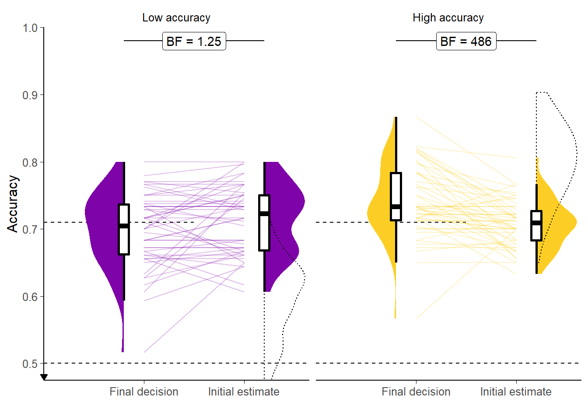
Figure 3.1: Response accuracy for the Dots task with in/accurate advisors.
Faint lines show individual participant means, for which the violin and box plots show the distributions. The half-width horizontal dashed lines show the level of accuracy which the staircasing procedure targeted, while the full width dashed line indicates chance performance. Dotted violin outlines show the distribution of actual advisor accuracy.
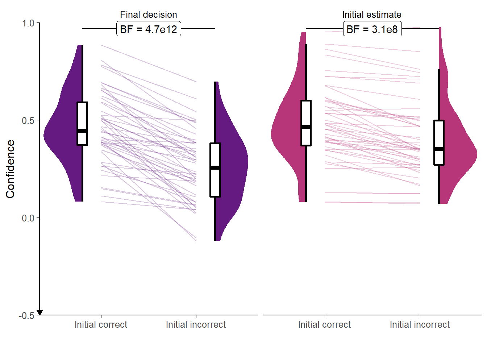
Figure 3.2: Confidence for the Dots task with in/accurate advisors.
Faint lines show individual participant means, for which the violin and box plots show the distributions. Final confidence is negative where the answer side changes. Theoretical range of confidence scores is initial: [0,1]; final: [-1,1].
Before exploring the interaction between the participants’ responses and the advisors’ advice, and the participants’ advisor choice behaviour, it is useful to verify that participants interacted with the task in a sensible way, and that the task manipulations worked as expected. In this section, task performance is explored during the Familiarisation phase of the experiment where participants received advice from a pre-specified advisor on each trial. There were an equal number of these trials for each participant for each advisor.
3.1.1.3.2.1 Accuracy
Accuracy of initial estimates was controlled by a staircasing procedure which aimed to pin accuracy to 71%. The accuracy of final decisions was free to vary according to the ability of the participant to take advantage of the advice on offer. As Figure 3.1 shows, participants’ accuracy scores for initial estimates were close to the target values (partly because participants whose accuracy scores diverged considerably were excluded). Participants tended to improve the accuracy of their responses following advice from High accuracy advisors, while the evidence was unclear as to whether there was any difference in response accuracy with Low accuracy advice. This is supported statistically by an ANOVA of response accuracy by Advisor and Time: there was no discernible effect of Advisor (F(1,49) = 3.86, p = .055; MLowAccuracy = 0.71 [0.69, 0.72], MHighAccuracy = 0.72 [0.71, 0.73]),9 but there was an interaction between Advisor and Time (F(1,49) = 17.32, p < .001; MImprovement|LowAccuracy = -0.01 [-0.03, 0.00], MImprovement|HighAccuracy = 0.03 [0.02, 0.05]); and there was an effect of Time F(1,49) = 4.80, p = .033; MFinal = 0.72 [0.71, 0.73], MInitial = 0.71 [0.70, 0.72].
3.1.1.3.2.2 Confidence
![Accuracy x Confidence correlations for Dots task with in/accurate advisors.<br/> Each point marks the Bayes factor for a participant's correlation between their initial accuracy and confidence (horizontal axis) and final accuracy and confidence (vertical axis). Shaded bands show areas of no information (1/3 < BF < 3), with evidence for a correlation rightwards and upwards of the area and evidence against below and leftwards. Note that the Bayes factor is a measure of the likelihood the correlation is not 0, not a direct measure of the strenght of the correlation. The blue line indicates the overall pattern, with shaded area giving the 95\% confidence intervals. Axes use $\text{log}_{10}$ scale.](_main_files/figure-html/ac-acc-dots-r-confidence-cor-1.png)
Figure 3.3: Accuracy x Confidence correlations for Dots task with in/accurate advisors.
Each point marks the Bayes factor for a participant’s correlation between their initial accuracy and confidence (horizontal axis) and final accuracy and confidence (vertical axis). Shaded bands show areas of no information (1/3 < BF < 3), with evidence for a correlation rightwards and upwards of the area and evidence against below and leftwards. Note that the Bayes factor is a measure of the likelihood the correlation is not 0, not a direct measure of the strenght of the correlation. The blue line indicates the overall pattern, with shaded area giving the 95% confidence intervals. Axes use \(\text{log}_{10}\) scale.
Generally, we expect participants to be more confident on trials on which they are correct compared to trials on which they are incorrect. Participants were systematically more confident on correct as compared to incorrect trials for both initial estimates and final decisions (Figure 3.2; Figure 3.3). There is considerable variation between participants both on their baseline confidence and on its variability (not shown), despite all participants being roughly matched for accuracy. The narrow accuracy range, and its random nature mean there was no evidence of a correlation between participant accuracy and confidence for initial (BFH1:H0 = 1/2.80) or final (BFH1:H0 = 1/2.08), although neither of these correlations indicated good evidence that no correlation existed. Variation between individuals’ confidence reports is expected (Ais et al. 2016; Navajas et al. 2017).
We ran an ANOVA on confidence by Time (initial estimates versus final decisions) and Correctness of the initial estimate (Correct initial estimates versus Incorrect initial estimates). For this analysis confidence was directionally coded so that final decision confidence was negative if the answer side changed between the initial estimate and final decision. The analysis indicated that participants were more confident in their initial estimates than their final decisions (F(1,49) = 15.82, p < .001; MFinal = 17.99 [15.55, 20.43], MInitial = 22.06 [19.27, 24.84]). This makes sense given that there is more scope for participants to reverse their confidence than to increase it on any given trial given the way the scale works. There was also a main effect of Correctness, with participants being more confident overall where their initial estimate was on correct as compared to when it was incorrect (F(1,49) = 168.89, p < .001; MCorrect = 23.64 [21.05, 26.24], MIncorrect = 16.40 [14.07, 18.74]). There was an interaction, with participants becoming even less confident between initial estimates and final decisions for trials where the initial estimate was incorrect (F(1,49) = 46.01, p < .001; MIncrease|Correct = -0.97 [-2.62, 0.69], MIncrease|Incorrect = -7.17 [-9.89, -4.45]). This indicates that confidence is behaving as in a sensible manner.
3.1.1.3.2.3 Metacognitive ability
![Metacognitive performance for the Dots task with in/accurate advisors.<br/> Faint lines show Receiver Operator Characteristic (ROC) curves for individual participants, while points and solid lines show mean data for all participants. Each participant's data are split into initial estimates and final decisions. For correct and incorrect responses seperately, the probability of a confidence rating being above a response threshold is calculated, with the threshold set to every possible confidence value in turn. This produces a point for each participant in each response for each possible confidence value indicating the probability of confidence being at least that high given the answer was correct, and the equivalent probability given the answer was incorrect. These points are used to create the faint lines, and averaged to produce the solid lines. The dashed line shows chance performance where the increasing confidence threshold leads to no increase in discrimination between correct and incorrect answers. The inset plot shows the distribution of areas under the ROC, and the label gives the mean value.](_main_files/figure-html/ac-acc-dots-r-metacog-1.png)
Figure 3.4: Metacognitive performance for the Dots task with in/accurate advisors.
Faint lines show Receiver Operator Characteristic (ROC) curves for individual participants, while points and solid lines show mean data for all participants. Each participant’s data are split into initial estimates and final decisions. For correct and incorrect responses seperately, the probability of a confidence rating being above a response threshold is calculated, with the threshold set to every possible confidence value in turn. This produces a point for each participant in each response for each possible confidence value indicating the probability of confidence being at least that high given the answer was correct, and the equivalent probability given the answer was incorrect. These points are used to create the faint lines, and averaged to produce the solid lines. The dashed line shows chance performance where the increasing confidence threshold leads to no increase in discrimination between correct and incorrect answers. The inset plot shows the distribution of areas under the ROC, and the label gives the mean value.
Where performance on the underlying task is held constant, as here at least for participants’ initial pre-advice decisions, metacognitive sensitivity can be measured in a bias-free way by plotting Receiver Operating Characteristic (ROC) curves for metacognitive responses (Fleming and Lau 2014).10 ROC curves are obtained by calculating at each of a number of different points on a confidence scale, the probability that the confidence is at least that high for correct versus incorrect answers. The area under the ROC curve gives a measure of the ability of confidence ratings to distinguish correct and incorrect responses. An area under the ROC curve of .5 indicates chance performance, and a value of 1 indicates perfect discrimination.
As shown by Figure 3.4, almost all participants showed above-chance metacognitive sensitivity for initial estimates and final decisions. Participants generally showed higher metacognitive sensitivity for final decisions, in line with their improved performance on these trials. Participants’ metacognitive sensitivity was not particularly high, reflecting the difficulty of the task, and in line with previous datasets with this task (Pescetelli, Hauperich, and Yeung 2021). There was no evidence of participants’ metacognitive sensitivity being correlated with their task performance (Initial estimates: r(48) = -.213 [-.306, .250], p = .833; Final decisions: r(48) = .266 [-.243, .313], p = .791). This is expected when task performance is tightly controlled, because under these conditions variation in task performance reflects variation in ability within a participant rather than between participants.
3.1.1.3.3 Advisor performance
The advice is generated probabilistically from the rules described previously in Table 3.1. It is thus important to get a sense of the actual advice experienced by the participants.
| Advisor | Target|correct | Actual|correct | Target|incorrect | Actual|incorrect |
|---|---|---|---|---|
| High accuracy | .800 | .800 | .200 | .203 |
| Low accuracy | .600 | .608 | .400 | .422 |
| Advisor | Target accuracy | Mean accuracy |
|---|---|---|
| High accuracy | .800 | .799 |
| Low accuracy | .600 | .601 |
The advisors’ performance was stochastic, with the advisors agreeing or disagreeing with set probabilities depending upon whether the participant was correct or incorrect in their initial estimate. The performance of the advisors in practice was as specified (Table 3.3). The participants’ accuracy rates were controlled with an adaptive staircase, meaning that the advisors’ agreement strategies produced overall advice accuracy at target rates. The advisors’ actual accuracies matched the target accuracies (Table 3.4), with 49/50 participants experiencing the planned relationship wherein the High accuracy advisor’s advice was more accurate than the Low accuracy advisor’s advice.
3.1.1.3.4 Hypothesis test
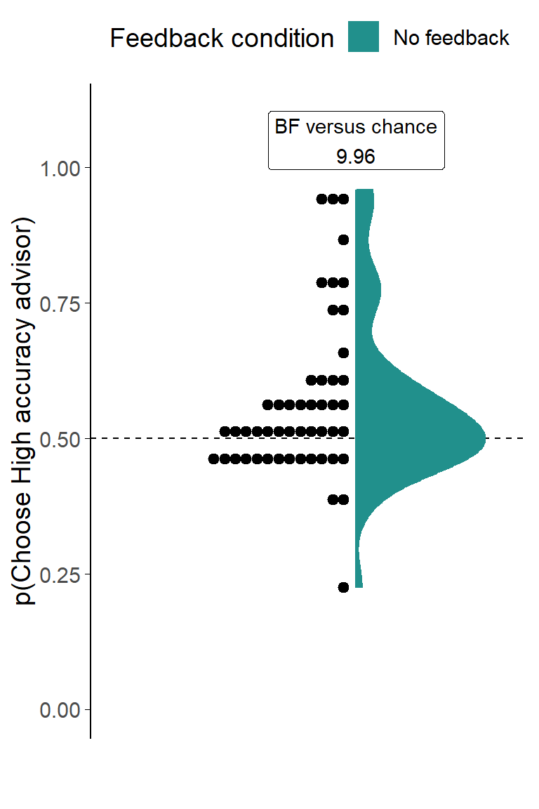
Figure 3.5: Dot task advisor choice for in/accurate advisors.
Participants’ pick rate for the advisors in the Choice phase of the experiment. The violin area shows a density plot of the individual participants’ pick rates, shown by dots. The chance pick rate is shown by a dashed line.
With basic task performance as expected, our key analysis focused on participants’ choice of advisors. As predicted, and as shown in Figure 3.5, participants selected the High accuracy advisor at a rate greater than would be expected if their choosing were random (t(49) = 3.09, p = .003, d = 0.44, BFH1:H0 = 9.96; M = 0.57 [0.52, 0.61], \(\mu\) = 0.5). The modal choice remained at chance level (.5), but almost all participants manifesting a preference preferred the High accuracy advisor.
While this effect is interesting, it is substantially smaller than participants’ preference for picking the top advisor regardless of identity (t(49) = 5.47, p < .001, d = 0.77, BFH1:H0 = 1.0e4; MP(PickFirst) = 0.65 [0.60, 0.71], \(\mu\) = 0.5), an effect that we would hope would be random and even out across participants. Note that because the advisor position is well balanced (BFH1:H0 = 1/6.29; MP(HighAccuracyFirst) = 0.50 [0.48, 0.51], \(\mu\) = 0.5) across advisors the presence of a preference for advisor by position would not cause a preference for an individual advisor.
3.1.1.3.5 Follow-up tests
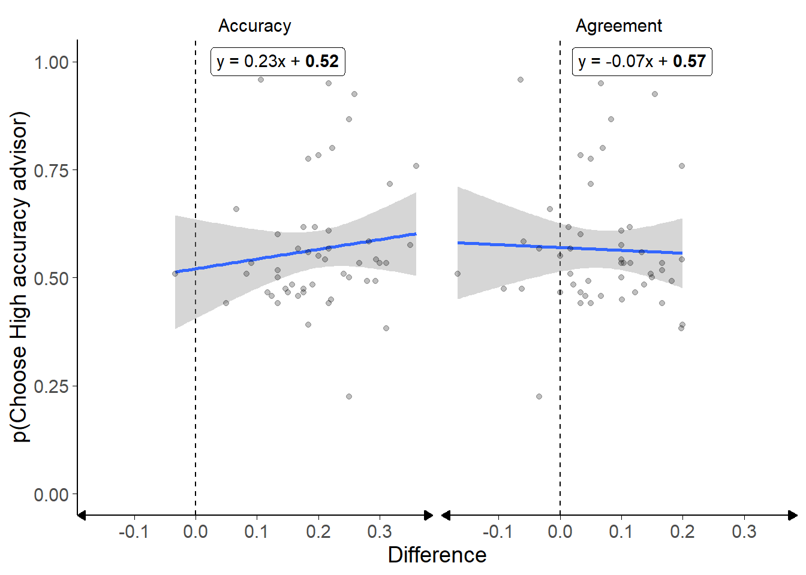
Figure 3.6: Advisor choice by experience in the Dots task with in/accurate advisors.
Each dot is a participant’s proportions. The difference in accuracy rates is calculated as the proportion of correct answers seen from the High accuracy advisor minus the proportion of correct answers seen from the Low accuracy advisor, and the difference in agreement rates similarly for agreement. The participants did not receive feedback on the correct answers
As noted above, the stochastic nature of the advisors’ advice meant that there was some variation in the participants’ experience of the advisors. Despite this difference, there was no evidence of a relationship between participants’ advisor preference and their experience of either advisor accuracy (BFH1:H0 = 1/2.28) or advisor agreement (BFH1:H0 = 1/3.05), with the latter indicating an absence of a relationship (Figure 3.6). This is not entirely surprising because, as with the accuracy correlations discussed above, there was relatively little variation in experience of advisors so effects might be expected to be small and difficult to detect.
We might also expect advisor preference to vary as a function of initial confidence. Perhaps, for example, participants may have a strong preference for the High accuracy advisor but only exercise that preference where they are unsure about the answer themselves (i.e. where advice is most valuable to them). This appeared not to be the case: we split participants’ trials into high and low confidence based on their idiosyncratic median confidence, and conducted a paired t-test to compare pick rate of the High accuracy advisor for high versus low confidence trials. The Bayes factor for this t-test indicated good evidence of no difference in pick rates (BFH1:H0 = 1/6.49).
These uninformative results are typical of those across all Dots task experiments in this chapter. To save space, these analyses are not reported for subsequent Dots task experiments.
3.1.1.3.6 Discussion
In the absence of feedback, it should be possible for a person to evaluate advice using the proxy of whether or not the advice accords with their initial opinion, at least given some reasonable assumptions about the independence of the initial opinion and the advice. In this experiment, we tested whether participants would be able to exploit this heuristic to detect that one advisor was more useful than another, and whether they would choose to hear advice from the more useful advisor. Participants showed a tendency, where they had a preference, to prefer the High accuracy advisor. In the next experiment, we aimed to replicate the results in a different task.
3.1.2 Experiment 1B: Advice accuracy effects in the Dates task
This experiment attempted to replicate the results of the previous experiment using a different task. The replication used a binary version of the Dates task reported in Experiment 0§B.1. Unlike in the Dots task above, and because the study was newly designed for this work, participants in the Dates task were split into conditions so that half received feedback while learning about the advisors and half did not.
3.1.2.1 Open scholarship practices
This experiment was preregistered at https://osf.io/5xpvq.
The experiment data are available in the esmData package for R (Jaquiery 2021c).
A snapshot of the state of the code for running the experiment at the time the experiment was run can be obtained from https://github.com/oxacclab/ExploringSocialMetacognition/blob/master/ACBin/acc.html.
3.1.2.2 Method
62 participants each completed 52 trials over 4 blocks of the binary version of the Dates task§2.1.3.2.3. On each trial, participants were presented with an historical event that occurred on a specific year between 1900 and 2000. They were given a date and asked whether the event occurred before or after that date, indicating their confidence in their decision by selecting an appropriate point on the relevant answer bar. Participants then received advice indicating which of the two bars (before or after) was supposedly the correct answer. Participants could then mark a final response in the same manner as their original response.
Participants started with 1 block of 10 trials that contained no advice to allow them to familiarise themselves with the task. All trials in this section included feedback for all participants indicating whether or not the participant’s response was correct.
Participants then did 2 trials with a practice advisor to get used to receiving advice. They also received feedback on these trials. They were informed that they would “receive advice from advisors” to “help you complete the task.” They were told that the “advisors aren’t always correct, but they are quite good at the task,” and informed that they should “identify which advisors are best and to weigh their advice accordingly.”
Participants then performed 3 blocks of trials that constituted the main experiment. The first two of these were Familiarisation blocks where participants had a single advisor in each block for 14 trials, plus 1 attention check.
Participants were split into four conditions that produced differences in their experience of these Familiarisation blocks. These conditions were whether or not they received feedback, and which of the two advisors they were familiarized with first.
Finally, participants performed a Test block of 10 trials that offered them a choice on each trial of which of the two advisors they had encountered over the last two blocks would give them advice. No participants received feedback during the test phase.
3.1.2.2.1 Advice profiles
The High accuracy and Low accuracy advisor profiles issued binary advice (endorsing either the ‘before’ or ‘after’ column) probabilistically based on whether or not the participant had selected the correct column in their initial estimate (Table 3.5). The High accuracy advisor was agreed with the participant’s initial estimate on 80% of the trials where the participant was correct, but only 20% of the trials on which the participant was incorrect, meaning that the High accuracy advisor was correct 80% of the time. Using an analogous setup, the Low accuracy advisor was correct 59% of the time. To the extent that a participant was better than chance in answering the questions, the High accuracy advisor profile would agree more frequently. This mimics the hypothesised relationship wherein agreement between advisors and judges is driven by shared access to the truth.
## Warning in table_fill(cells, trim = trim): NAs introduced by coercion| Advisor | Participant correct | Participant incorrect | Overalla | Overall accuracya |
|---|---|---|---|---|
| High accuracy | .800 | .200 | .500 | .800 |
| Low accuracy | .590 | .410 | .500 | .590 |
| a Where participants’ initial estimate accuracy is 50% |
3.1.2.3 Results
3.1.2.3.1 Exclusions
Individual trials were screened to remove those that took longer than 60s to complete. 4 participants had a total of 5 trials removed in this way, representing 0.21% of all trials. Participants were then excluded for having fewer than 11 trials remaining, fewer than 10 trials on which they had a choice of advisor, or for giving the same initial and final response on more than 90% of trials. These criteria led to no participants being excluded from this experiment.
3.1.2.3.2 Task performance
Before exploring participants’ advisor choice behaviour, it is useful to verify that participants interacted with the task in a sensible way, and that the task manipulations worked as expected. In this section, task performance is explored during the Familiarisation phase of the experiment where participants received advice from a pre-specified advisor on each trial. There were an equal number of these trials for each participant for each advisor, although as mentioned above a small number of trials were dropped from analysis where response times were overly long.
For the purposes of exploring participants’ performance on the task, the conditions are pooled together. The participants were randomly assigned to conditions, and thus we know any differences in performance between conditions would be random.
3.1.2.3.2.1 Response times
Participants made two decisions during each trial. Neither of these decisions had a maximum response time. Each participant’s response times for both initial estimates and final decisions can be seen in Figure 3.7. The distribution of these response times helps characterise some differences between the Dots task and the Dates task. In the former, decisions for both initial estimates and final decisions are tightly clustered, with a clear structure and pattern to the responses for all participants. In the Dates task however, response times are not only longer, but they are also much more varied within participants. Some increase in variance is expected with an increase in mean, especially with fewer trials for each participant, but the extent of the differences clearly shows that the tasks provide participants with different experiences: the Dots task is tightly rhythmic and repetitive, while the Dates task is more heterogeneous.
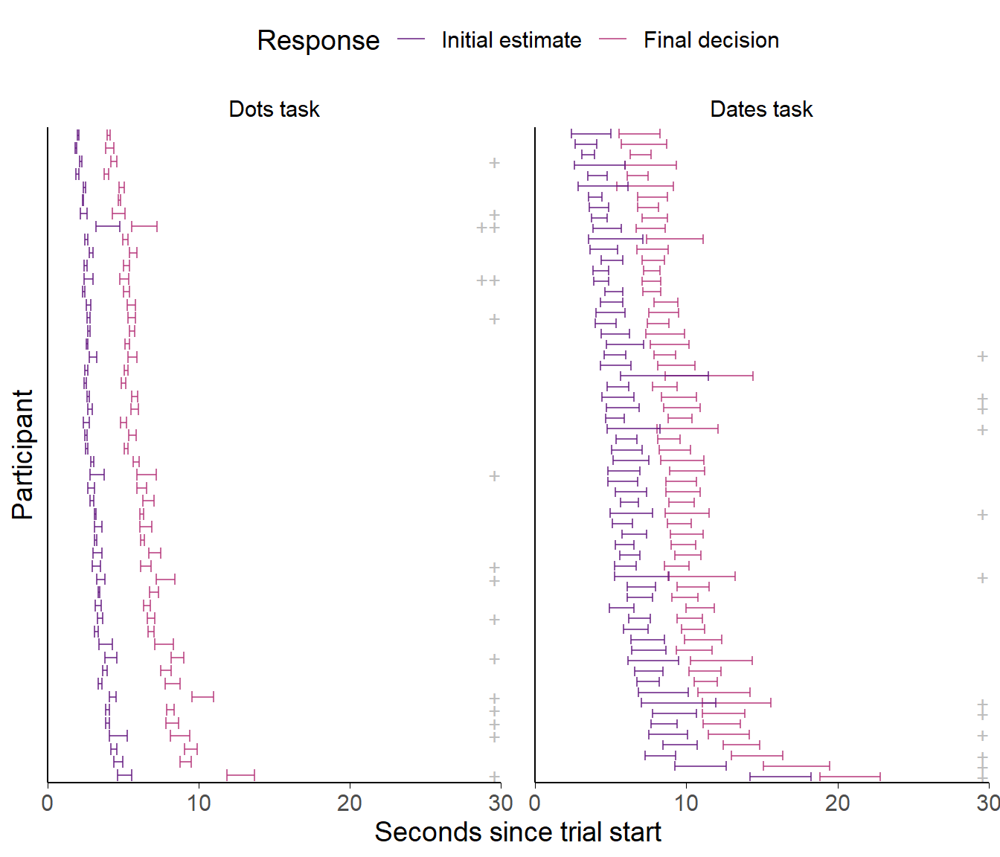
Figure 3.7: Response times for the Dates task with in/accurate advisors.
Each row indicates a single participant’s trials. The error bars show the 95% confidence intervals of the mean response time for each decision. The plusses on the right show the number of trials where response times were more than 3 standard deviations away from the mean of all Dates task final response times (rounded to the next 10s): + = 1-5 trials, ++ = 6-10 trials.
![Response accuracy for the Dates task with in/accurate advisors.<br/> Faint lines show individual participant means, for which the violin and box plots show the distributions. The dashed line indicates chance performance. Dotted violin outlines show the distribution of actual advisor accuracy.<br/> Because there were relatively few trials, the proportion of correct trials for a participant generally falls on one of a few specific values. This produces the lattice-like effect seen in the graph. Some participants had individual trials excluded for over-long response times, meaning that the denominator in the accuracy calculations is different, and thus producing accuracy values which are slightly offset from others'.](_main_files/figure-html/ac-acc-dates-r-performance-acc-1.png)
Figure 3.8: Response accuracy for the Dates task with in/accurate advisors.
Faint lines show individual participant means, for which the violin and box plots show the distributions. The dashed line indicates chance performance. Dotted violin outlines show the distribution of actual advisor accuracy.
Because there were relatively few trials, the proportion of correct trials for a participant generally falls on one of a few specific values. This produces the lattice-like effect seen in the graph. Some participants had individual trials excluded for over-long response times, meaning that the denominator in the accuracy calculations is different, and thus producing accuracy values which are slightly offset from others’.
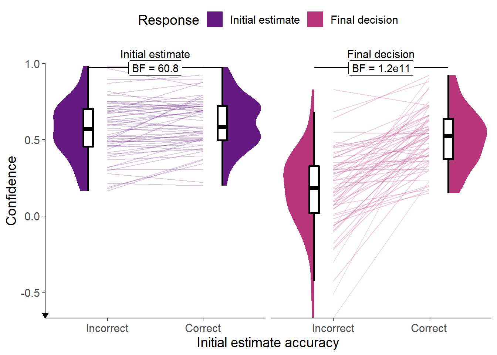
Figure 3.9: Confidence for the Dates task with in/accurate advisors.
Faint lines show individual participant means, for which the violin and box plots show the distributions. Final confidence is negative where the answer side changes. Theoretical range of confidence scores is initial: [0,1]; final: [-1,1].
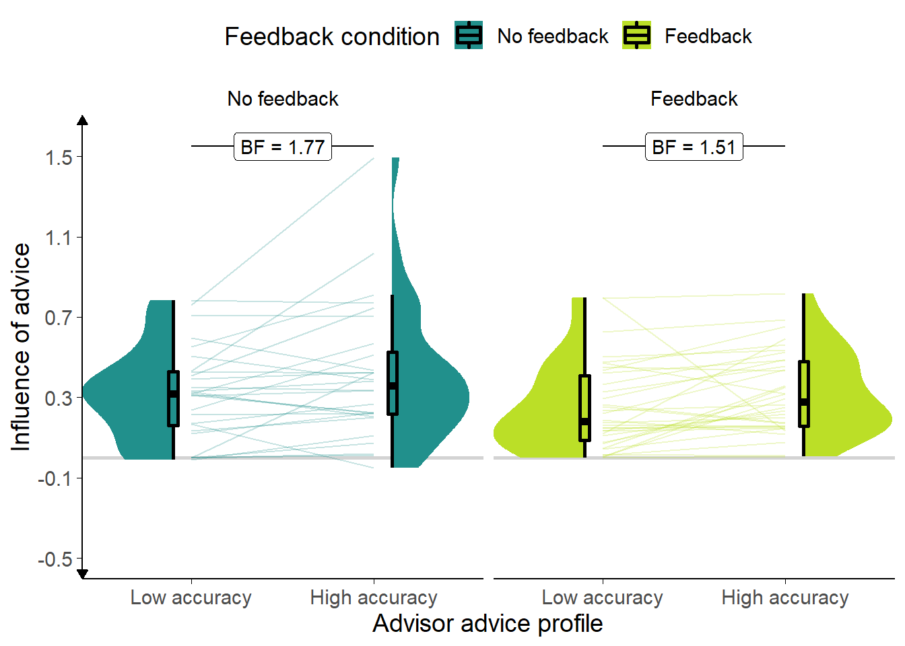
Figure 3.10: Influence for the Dates task with in/accurate advisors.
Participants’ weight on the advice for advisors in the Familiarisation stage of the experiment. The shaded area and boxplots indicate the distribution of the individual participants’ mean influence of advice. Individual means for each participant are shown with lines in the centre of the graph. The theoretical range for influence values is [-2, 2].
3.1.2.3.2.2 Accuracy
Unlike in the Dots version of the task, participant accuracy is not controlled because it depends on participants’ existing knowledge (and guesses) across a relatively small and varied set of questions. Correspondingly, accuracy varied substantially across participants (Figure 3.8). Figure 3.8 also shows that participants managed to improve their performance from their initial estimates to their final decisions with both advisors (F(1,61) = 36.40, p < .001; MFinalDecision = 0.68 [0.65, 0.70], MInitialEstimate = 0.60 [0.57, 0.63]). This is likely because the advisors themselves were more accurate than the participants, so following their advice was generally a good strategy, and the difficulty of the task meant that participants were very willing to be influenced by advice.
As would be expected from participants following advice, the improvement in accuracy from initial estimates to final decisions was greater for the High accuracy advisor than the Low accuracy advisor (F(1,61) = 32.46, p < .001; MImprovement|HighAccuracy = 0.15 [0.11, 0.18], MImprovement|LowAccuracy = 0.01 [-0.02, 0.04]).
3.1.2.3.2.3 Confidence
Generally, we expect participants to be more confident on trials on which they are correct compared to trials on which they are incorrect (Figure 3.9). Participants’ initial estimates and final decisions were both systematically more confident when the initial estimate was correct as compared to incorrect (F(1,61) = 102.69, p < .001; MCorrect = 0.56 [0.52, 0.60], MIncorrect = 0.36 [0.32, 0.41]). Participants were less confident on final decisions than on initial estimates (F(1,61) = 72.30, p < .001; MFinalDecision = 0.34 [0.29, 0.39], MInitialEstimate = 0.58 [0.54, 0.63]), and the decrease over time was greatest for the trials where the initial estimate was incorrect (F(1,61) = 68.17, p < .001; MIncrease|Correct = -0.09 [-0.14, -0.05], MIncrease|Incorrect = -0.40 [-0.48, -0.31]).
3.1.2.3.2.4 Metacognitive ability
![Metacognitive performance for the Dates task with in/accurate advisors.<br/> Faint lines show Reciever Operator Characteristic (ROC) curves for individual participants, while points and solid lines show mean data for all participants. Each participant's data are split into initial estimates and final decisions. For correct and incorrect responses seperately, the probability of a confidence rating being above a response threshold is calculated, with the threshold set to every possible confidence value in turn. This produces a point for each participant in each response for each possible confidence value indicating the probability of confidence being at least that high given the answer was correct, and the equivalent probability given the answer was incorrect. These points are used to create the faint lines, and averaged to produce the solid lines. The dashed line shows chance performance where the increasing confidence threshold leads to no increase in discrimination between correct and incorrect answers. The inset plot shows the distribution of areas under the ROC, and the label gives the mean value.](_main_files/figure-html/ac-acc-dates-r-metacog-1.png)
Figure 3.11: Metacognitive performance for the Dates task with in/accurate advisors.
Faint lines show Reciever Operator Characteristic (ROC) curves for individual participants, while points and solid lines show mean data for all participants. Each participant’s data are split into initial estimates and final decisions. For correct and incorrect responses seperately, the probability of a confidence rating being above a response threshold is calculated, with the threshold set to every possible confidence value in turn. This produces a point for each participant in each response for each possible confidence value indicating the probability of confidence being at least that high given the answer was correct, and the equivalent probability given the answer was incorrect. These points are used to create the faint lines, and averaged to produce the solid lines. The dashed line shows chance performance where the increasing confidence threshold leads to no increase in discrimination between correct and incorrect answers. The inset plot shows the distribution of areas under the ROC, and the label gives the mean value.
Estimates of the participants’ metacognitive abilities were highly variable, with many participants displaying below-chance metacognitive ability (Figure 3.11). While this may appear concerning, recall that metacognitive sensitivity and bias vary substantially and cannot be reliably estimated using ROC curves where performance accuracy on the underlying task is highly variable, so it is not necessarily the case that these values give cause for alarm.
Performance on the underlying task and metacognitive ability were correlated (Initial estimates: r(60) = 2.550 [.068, .522], p = .013; Final decisions: r(60) = 4.798 [.319, .686], p < .001), showing that, as one might expect, participants with a greater ability to perform the Dates task have a greater insight into their performance on the Dates task. This in turn suggests that, despite the low number of trials on the task, we are able to obtain meaningful insights into participants’ metacognitive abilities, albeit without being able to precisely estimate the metacognitive sensitivity or bias for an individual participant.
3.1.2.3.3 Advisor performance
| Advisor | Target|correct | Actual|correct | Target|incorrect | Actual|incorrect |
|---|---|---|---|---|
| High accuracy | .800 | .787 | .200 | .216 |
| Low accuracy | .590 | .606 | .410 | .438 |
| Advisor | Target accuracy | Mean accuracy |
|---|---|---|
| High accuracy | .800 | .797 |
| Low accuracy | .590 | .585 |
The advice is generated probabilistically from the rules described previously (Advice profiles§3.1.2.2.1). The advisors agreed with participants contingent on the accuracy of the participants’ initial estimates at close to the target rates (Table 3.6). This meant that advisors were as accurate overall as they were intended to be in the familiarisation phase (Table 3.7). Most (57/62, 91.94%) participants experienced the High accuracy advisor as providing more accurate advice than the Low accuracy advisor.
3.1.2.3.4 Advisor influence
The High accuracy advisor was substantially more influential than the other Low accuracy advisor (F(1,60) = 9.98, p = .002; MHighAccuracy = 0.36 [0.29, 0.43], MLowAccuracy = 0.28 [0.22, 0.34]). This tendency did not differ significantly between the group who received trial-by-trial feedback and the group who did not receive feedback (F(1,60) = 0.20, p = .652; MHigh-LowAccuracy|NoFeedback = 0.09 [0.01, 0.18], MHigh-LowAccuracy|Feedback = 0.07 [0.01, 0.14]). Nor did the participants in the feedback and no feedback conditions appear to differ in the extent to which they took advice (F(1,60) = 1.79, p = .186; NA).
These influence measurements are calculated on the Familiarisation phase trials in which participants are not offered a choice of advisor. It is during this phase that participants are learning about the value of the advice (especially in the Feedback condition), and thus any influence on later trials may be diluted by low influence on trials which occur before an advisor has had time to develop a reputation as reliable. This means that influence cannot be used as a reliable outcome measure for this experimental design, but it is nevertheless useful to explore to get a sense of how participants responded to the advice. An inspection of the individual participants’ data shows that very few participants had large influence differences between advisors (Figure 3.10).
3.1.2.3.5 Hypothesis test
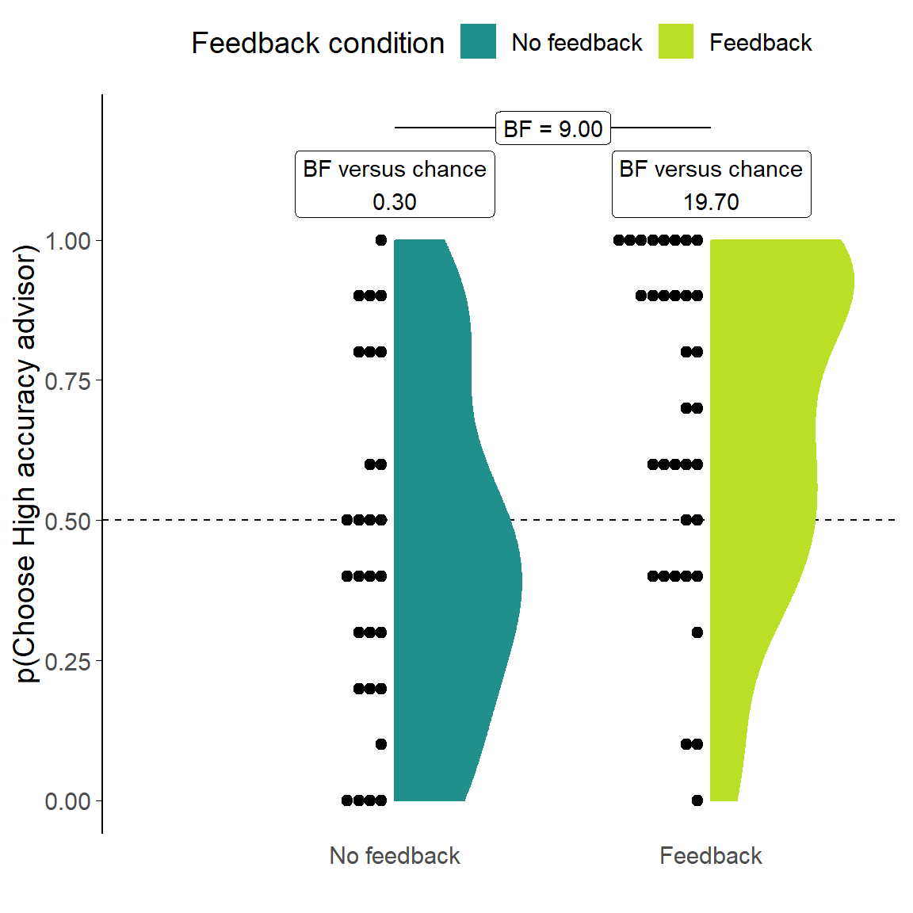
Figure 3.12: Dates task advisor choice for in/accurate advisors.
Participants’ pick rate for the advisors in the Choice phase of the experiment. The violin area shows a density plot of the individual participants’ pick rates, shown by dots. The chance pick rate is shown by a dashed line. Participants in the Feedback condition received feedback during the Familiarisation phase, but not during the Choice phase.
The key analysis in this experiment explores the participants’ preferences for picking the High accuracy advisor over the Low accuracy advisor. In the No feedback condition the mean of the distribution of participant picking preferences between the advisors was equivalent to chance (t(27) = -0.93, p = .363, d = 0.18, BFH1:H0 = 1/3.37; MNoFeedback = 0.45 [0.33, 0.57], \(\mu\) = 0.5). This is a different result to that observed in the Dots task§3.1.1.3.4, which also had no feedback. Preferences were quite evenly distributed across the full range of directions and strengths, with a slight numerical advantage for the Low accuracy advisor (Figure 3.12).
In the Feedback condition the mean of the distribution of selection rates was clearly different from chance. The High accuracy advisor was preferred by more participants, and preferred more strongly (t(33) = 3.41, p = .002, d = 0.58, BFH1:H0 = 19.7; MFeedback = 0.67 [0.57, 0.78], \(\mu\) = 0.5). The modal selection strategy was to select the High accuracy advisor at every opportunity. This indicates that participants could identify the more accurate advisor when feedback was provided and preferred to receive advice from that advisor. Interestingly, this meant that there was a difference in participants’ preference for picking the High accuracy advisor according to their experimental condition (t(57.02) = 2.95, p = .005, d = 0.75, BFH1:H0 = 8.99; MFeedback = 0.67 [0.57, 0.78], MNoFeedback = 0.45 [0.33, 0.57]).
It was discovered after the completion of experiments that the advisor position (whether the advisor appears on the top or bottom of the advisor choice panel) was not counterbalanced between advisors. This was true for all the Dates task experiments reported in this chapter. It had been decided during development of the tests to keep the advisors in the same position for every trial so that participants did not get mixed up between them. Together, this meant that the High accuracy advisor always appeared at the top and the Low accuracy advisor always appeared at the bottom, for every trial for every participant. We are thus unable to confirm that pick rate differences, or the absence of those differences, are caused by participants’ preferences for the advice the advisor would provide or the position the advisor was in on the screen. Furthermore, it is possible that any genuine preference for one advisor over the other was induced by the position, rather than independent of it (Zajkowski and Zhang 2021).
3.1.2.3.6 Follow-up tests
3.1.2.3.6.1 Ability of participants
It is plausible that participants who were better at the task had more insight into which of their advisors was more accurate. There was not enough evidence to determine whether participants in the No feedback condition selected the High accuracy advisor more frequently where they were more accurate themselves (r(26) = -.108, p = .586, BFH1:H0 = 1/2.14) or more well calibrated (as measured by area under the Receiver Operator Characteristics curve for initial estimates; r(26) = .157, p = .424, BFH1:H0 = 1/1.85).
3.1.2.3.6.2 Experience of advisors
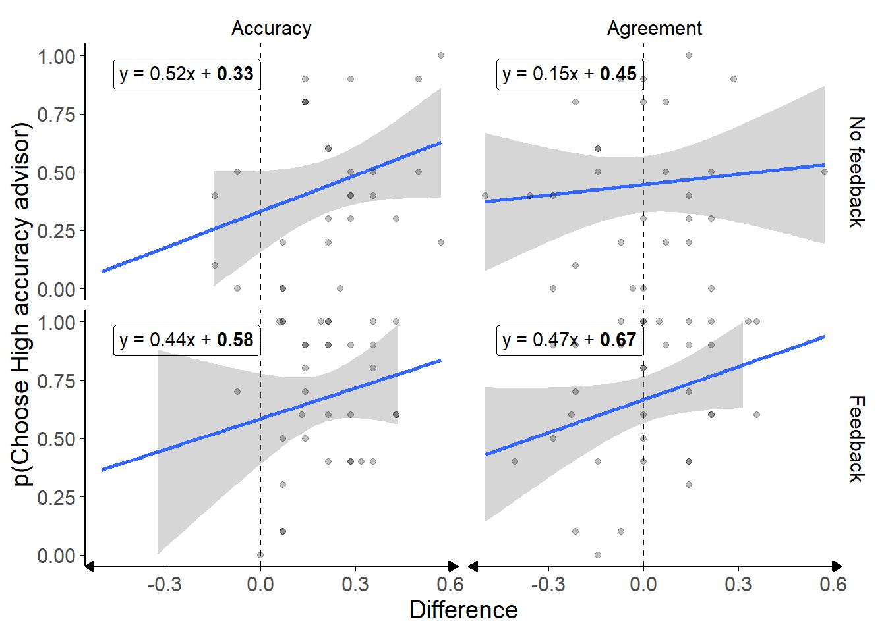
Figure 3.13: Preference predictors in the Dates task with in/accurate advisors.
Scatter plots of participants’ experience with advisors in terms of agreement or accuracy rates. Differences are expressed as the experienced rate for the High accuracy advisor minus the experienced rate for the Low accuracy advisor during the Familiarisation phase. Numbers in bold in the regression equations are significant at p < .05.
| Effect | Estimate | SE | \(t\) | \(p\) | |
|---|---|---|---|---|---|
| (Intercept) | 0.33 | 0.09 | 3.91 | < .001 | \(*\) |
| Accuracy | 0.52 | 0.29 | 1.78 | .080 | |
| FeedbackFeedback | 0.25 | 0.13 | 1.97 | .053 | |
| Accuracy:FeedbackFeedback | -0.08 | 0.49 | -0.16 | .875 | |
| Model fit: \(F\)(4.5, 3) = 58; \(p\) .007; \(R^2_{adj}\) = .147 |
| Effect | Estimate | SE | \(t\) | \(p\) | |
|---|---|---|---|---|---|
| (Intercept) | 0.45 | 0.06 | 7.96 | < .001 | \(*\) |
| Agreement | 0.15 | 0.26 | 0.58 | .565 | |
| FeedbackFeedback | 0.22 | 0.08 | 2.88 | .006 | \(*\) |
| Agreement:FeedbackFeedback | 0.32 | 0.37 | 0.88 | .385 | |
| Model fit: \(F\)(4.1, 3) = 58; \(p\) .010; \(R^2_{adj}\) = .134 |
The stochastic nature of the advisors’ advice meant that there was some variation in the participants’ experience of the advisors. Linear models were run predicting advisor choice behaviour based on experienced differences in accuracy (Table 3.8) and agreement (Table 3.9). Bayesian linear models were run obtaining Bayes Factors of leaving each component out of a model containing experienced agreement or accuracy difference, feedback condition, and their interaction, as well as a random factor for the participant’s identity.
In aggregate, the models indicated that participants in the Feedback group had a stronger preference for the High accuracy advisor than participants in the No feedback group, regardless of their actual experience of advisor agreement (BF+Feedback:-Feedback = 13.8) or accuracy (BF+Feedback:-Feedback = 8.87). There was no evidence of a relationship between participants’ advisor preference and their experience of either advisor accuracy (BF+Accuracy:-Accuracy = 1.67) or advisor agreement (BF+Agreement:-Agreement = 1.15), but neither of these had evidence strong enough to suggest the absence of such a relationship. The strongest evidence for the absence of an effect was for the interaction between feedback condition and experienced accuracy (BF+Interaction:-Interaction = 1/2.90) or agreement (BF+Interaction:-Interaction = 1/2.09), but this was also not beyond the stated threshold of 1/3.
The vagueness of the results is is not entirely surprising because, as with the accuracy correlations discussed above, there was relatively little variation in experience of advisors so effects might be expected to be small and difficult to detect. These uninformative results are typical of those across all Dots task experiments in this chapter. To save space, these analyses are not reported for subsequent Dots task experiments.
3.1.3 Discussion
We investigated whether more accurate advisors would be preferentially selected by participants when participants were unable to use feedback to evaluate the quality of advisors. We performed two experiments using different tasks, and found mixed results. In the branch of the Dates task where feedback was provided, participants had a clear preference for the more accurate advisor. This preference was also seen in the Dots task, in which no participants received feedback. Contrary to these results, however, participants in the Dates task who did not receive feedback did not show a systematic preference for either advisor.
The difference between the task results where feedback was denied to participants is probably due to the Dates task being a generally more difficult task for participants than the Dots task. This extra difficulty likely meant that participants in the Dates task were unable to tell the advisors apart. If the Pescetelli and Yeung (2021) model of metacognitive evaluation of advice is accurate, participants may have been subjectively very unsure of whether their answer was correct or incorrect, and thus in the absence of feedback they cannot glean insight into the accuracy of advice by attending to whether or not the advice contradicts their initial estimate. Alternatively, if this process is not driving performance in the Dates task, the additional difficulty may simply have meant that participants’ strong desire to see advice (Gino and Moore 2007) may have rendered the relative quality of the advice unimportant.
In both tasks the advisor preferences included many participants whose preference was either neutral (all tasks) or in favour of the Low accuracy advisor (Dates task). This variability in pick rates from the participants in the No feedback condition of the Dates task, suggests that preferences are diverse both in terms of direction and strength in the absence of any systematic effects. There is substantial variability in pick rates for participants in the Feedback condition of the Dates task, too, indicating that, compared to the No feedback condition, everyone might have nudged their preference a bit towards the High accuracy advisor.
Pick rates in the Dots task were also varied, but rather than being evenly spread (as in the No feedback Dates task participants) or massed in favour of the High accuracy advisor with a long, fat tail including exclusive selection of the Low accuracy advisor, Dots task participants were massed in the centre with a long tail out to strong preference for the High accuracy advisor. The Dots task data may have reduced variability because there were more trials that offered the participants a choice of advisor, and the novelty value of the ignored advisor may have increased relative to the chosen advisor as the test phase progressed. Alternatively, participants making repeated choices may have eventually felt that continuing to ignore one advisor was unfair, and that pragmatic reasons for including the opinion of a less expert voice outweighed the performance-maximisation reasons for not including that voice (Mahmoodi et al. 2015).
Another explanation for the difference may be the level of engagement with the tasks. If participants in the Dates task were more engaged with the more challenging and (subjectively but consistent with participant feedback) more enjoyable task, picking of advisors may have been more deliberative than in the Dots task, where the repetitive nature of the trials could have led to disengagement and random advisor choice behaviour for some participants.
The results of these studies were mixed in terms of supporting our hypothesis that more expert advisors would be discriminated and preferentially picked by participants even in the absence of feedback. The underlying mechanism we believe to be responsible for evaluating advisors in the absence of feedback is agreement, and thus a more powerful test of the mechanism is to move from demonstrating the phenomenon (detection of accuracy differences without feedback) to demonstrating the mechanism (discrimination based on agreement differences). This investigation of agreement as a mechanism for driving advisor evaluation in the absence of feedback is the subject of the next experiments.
3.2 Effects of advisor agreement on advisor choice
Experiments 1A§3.1.1 and 1B§3.1.2 revealed differences in how participants selected the advisors between the Dots task (which has no feedback) and the No feedback condition of the Dates task for High versus Low accuracy advisors. We may expect more pronounced effects in the absence of feedback when contrasting High versus Low agreement advisors, because we expect that agreement is the driving force behind the accuracy differences where feedback is not provided. Pescetelli and Yeung (2021) demonstrated that advisors who agree more frequently are more influential (regardless of the presence of feedback, but especially without it) in a lab-based perceptual decision-making task. Here we explored the impact of agreement on choice of advisor. Experiment 2A§3.2.1 looks at this effect in the Dots task, while Experiment 2B§3.2.2 does the same for the Dates task.
3.2.1 Experiment 2A: advisor agreement effects in the Dots task
3.2.1.1 Open scholarship practices
Due to an oversight, this experiment was not preregistered.
The experiment data are available in the esmData package for R (Jaquiery 2021c), and also directly from https://osf.io/8cnpq/.
A snapshot of the state of the code for running the experiment at the time the experiment was run can be obtained from https://github.com/oxacclab/ExploringSocialMetacognition/blob/9932543c62b00bd96ef7ddb3439e6c2d5bdb99ce/AdvisorChoice/index.html.
3.2.1.2 Method
68 participants each completed 368 trials over 7 blocks of a perceptual decision-making task. Each trial consisted of three phases: participants gave an initial estimate (with confidence) of which of two briefly presented boxes contained more dots; received advice on their decision from an advisor; and made a final decision (again, with confidence).
Participants started with 2 blocks of 60 trials that contained no advice. The first three trials were introductory trials that explained the task. All trials in this section included feedback indicating whether or not the participant’s response was correct.
Participants then did 5 trials with a practice advisor. They were informed that they would “get advice from an advisor to help you make your decision [original emphasis],” and that “advice is not always correct, but it is there to help you: if you use the advice you will perform better on the task.”
Participants then performed 2 sets of 2 blocks each. These sets consisted of 1 Familiarisation block of 60 trials in which participants were assigned one of two advisors. The Familiarisation block was followed with a Test block of 60 trials in which participants could choose between the advisors they encountered in the Familiarisation block. The participants saw different pairs of advisors in each set, with each pair consisting of one advisor with each of the advice profiles.
3.2.1.2.1 Advice profiles
The two advisor profiles (Table 3.10) used in the experiment were High agreement and Low agreement. These advisors were defined in terms of their likelihood of agreement with participants’ correct and incorrect initial estimates, while being matched for objective accuracy. The High agreement advisor gave advice that endorsed the same answer side as the participant’s initial estimate 77.3% of the time while the Low agreement advisor agreed with the participant 51.8% of the time. These overall agreement rates were split based on the target accuracy rates for participants’ initial estimates to achieve balanced overall accuracy rates between advisors.
| Advisor | Participant correct | Participant incorrect | Overall | Overall accuracy |
|---|---|---|---|---|
| High agreement | .840 | .610 | .773 | .709 |
| Low agreement | .660 | .170 | .518 | .709 |
3.2.1.3 Results
3.2.1.3.1 Exclusions
| Reason | Participants excluded |
|---|---|
| Accuracy too low | 0 |
| Accuracy too high | 0 |
| Missing confidence categories | 7 |
| Skewed confidence categories | 12 |
| Too many participants | 0 |
| Total excluded | 18 |
| Total remaining | 50 |
In line with the pre-registration, participants’ data were excluded from analysis where they had an average accuracy below 0.6 or above 0.85, did not have choice trials in all confidence categories (bottom 30%, middle 40%, and top 30% of prior confidence responses), had fewer than 12 trials in each confidence category, or finished the experiment after 50 participants had already submitted data which passed the other exclusion tests. Overall, 18 participants were excluded, with the details shown in Table 3.11.
3.2.1.3.2 Task performance
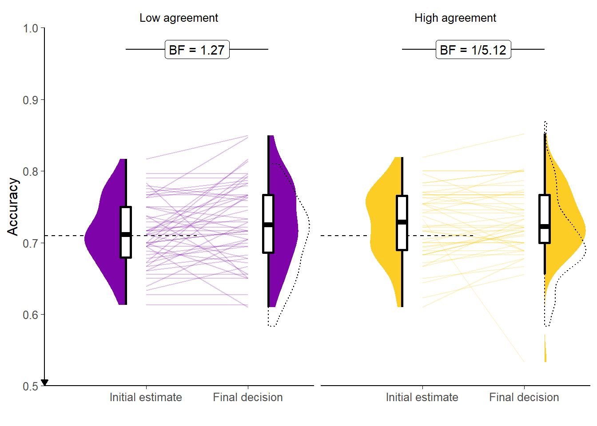
Figure 3.14: Response accuracy for the Dots task with dis/agreeing advisors.
Faint lines show individual participant means, for which the violin and box plots show the distributions. The half-width horizontal dashed lines show the level of accuracy which the staircasing procedure targeted, while the full width dashed line indicates chance performance. Dotted violin outlines show the distribution of actual advisor accuracy.
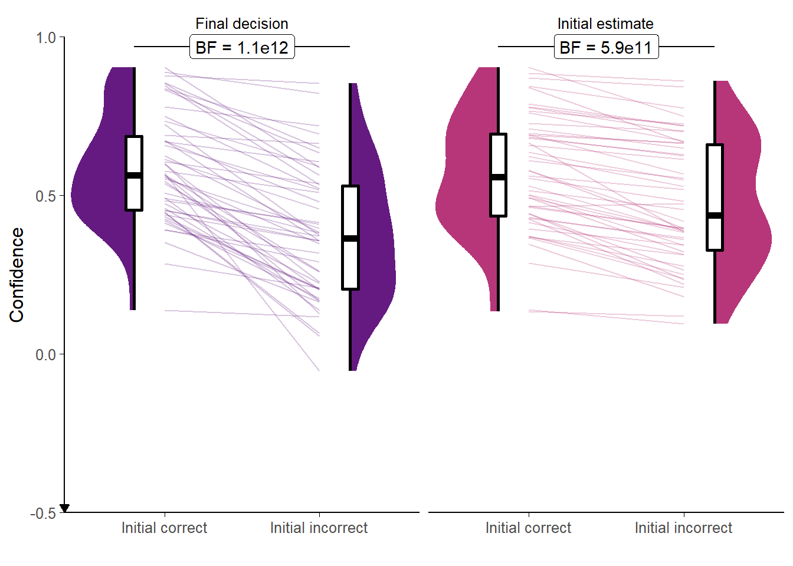
Figure 3.15: Confidence for the Dots task with dis/agreeing advisors.
Faint lines show individual participant means, for which the violin and box plots show the distributions. Final confidence is negative where the answer side changes. Theoretical range of confidence scores is initial: [0,1]; final: [-1,1].
Basic behavioural performance was similar to that observed with the same Dots task in Experiment 1A§3.1.1.3.2. Initial estimate accuracy converged on the target 71%, and participants may have benefited from advice in terms of their final decisions being more accurate than their initial estimates (F(1,49) = 5.48, p = .023; MFinal = 0.73 [0.72, 0.74], MInitial = 0.72 [0.71, 0.73]; Figure 3.14). There was no evidence of a general difference in participants’ overall accuracy between advisors (F(1,49) = 0.66, p = .420; MLowAgreement = 0.72 [0.71, 0.73], MHighAgreement = 0.73 [0.72, 0.74]), nor was there evidence of a difference in participants’ improvement in accuracy between advisors (F(1,49) = 1.33, p = .255; MImprovement|LowAgreement = 0.02 [0.00, 0.03], MImprovement|HighAgreement = 0.00 [-0.01, 0.02]).
Figure 3.15 and ANOVA indicated that participants were more confident in their answers when their initial estimate was correct as compared with incorrect (F(1,49) = 152.76, p < .001; MCorrect = 28.78 [26.34, 31.21], MIncorrect = 21.30 [18.60, 24.00]), and less confident in their final decisions than their initial estimates (F(1,49) = 6.44, p = .014; MFinal = 24.01 [21.46, 26.57], MInitial = 26.06 [23.37, 28.75]). These two factors interacted, with confidence only decreasing for final decisions in trials where the initial estimate was incorrect (F(1,49) = 51.45, p < .001; MIncrease|Correct = 0.81 [-0.62, 2.23], MIncrease|Incorrect = -4.90 [-7.03, -2.78]).
Perhaps surprisingly, there was no correlation between initial estimate accuracy and confidence (1/3.06), and no evidence for a correlation between final decision accuracy and confidence (1/1.06).
3.2.1.3.3 Advisor performance
The advice is generated probabilistically from the rules described previously in Table 3.10. It is thus important to get a sense of the actual advice experienced by the participants.
| Advisor | Target|correct | Actual|correct | Target|incorrect | Actual|incorrect |
|---|---|---|---|---|
| High agreement | .840 | .832 | .610 | .631 |
| Low agreement | .660 | .651 | .170 | .166 |
| Advisor | Target accuracy | Mean accuracy |
|---|---|---|
| High agreement | .709 | .705 |
| Low agreement | .709 | .704 |
The advisors agreed with the participants’ initial estimates at close to target rates (Table 3.12), and were as accurate on average as expected (Table 3.13). Nevertheless, some participants experienced in practice 10-20% differences in advisor accuracy (although neither advisor was systematically more accurate across participants). All participants experienced the intended relationship wherein the High agreement advisor agreed with them more than the Low agreement advisor.
3.2.1.3.4 Hypothesis test
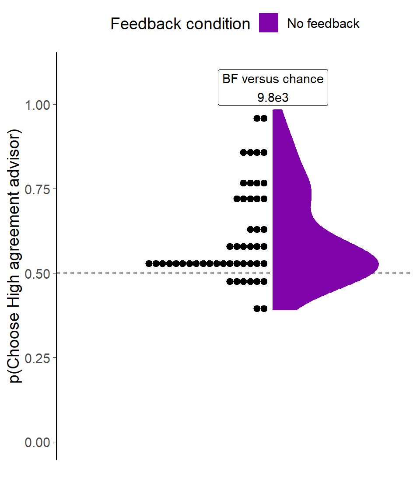
Figure 3.16: Dot task advisor choice for dis/agreeing advisors.
Participants’ pick rate for the advisors in the Choice phase of the experiment. The violin area shows a density plot of the individual participants’ pick rates, shown by dots. The chance pick rate is shown by a dashed line.
Our key analysis concerned whether participants would have a systematic preference for choosing the High agreement advisor when they were given a choice of advisor. Consistent with the key prediction of this experiment, advisor choice varied significantly as a function of advisor agreement rate (Figure 3.16): The High agreement advisor was preferred at a rate greater than that expected by chance (t(49) = 5.43, p < .001, d = 0.77, BFH1:H0 = 9.8e3; M = 0.61 [0.57, 0.65], \(\mu\) = 0.5). The modal preference remained at chance, but almost all participants who manifested a preference preferred the High agreement advisor.
While this effect is interesting, it is substantially smaller than participants’ preference for picking the top advisor regardless of identity (t(49) = 7.26, p < .001, d = 1.03, BFH1:H0 = 4.4e6; MP(PickFirst) = 0.66 [0.62, 0.71], \(\mu\) = 0.5), an effect that we would hope would be random and even out across participants. Note that because the advisor position is well balanced across advisors (BFH1:H0 = 1/2.70; MP(HighAgreementFirst) = 0.51 [0.50, 0.52], \(\mu\) = 0.5) the presence of a preference for advisor by position would not cause a preference for an individual advisor.
3.2.1.3.5 Summary/Discussion
Participants who had a preference for one of the two advisors almost universally preferred the High agreement advisor. These results are in line with the effects of advisor accuracy in the same task as found in Experiment 1A§3.1.1. They are also consistent with our hypothesis that agreement is used as a proxy for feedback when objective feedback is unavailable. Pescetelli and Yeung (2021) found a similar pattern using the same perceptual decision-making task and measuring the influence of advice rather than the choice of advisor. We next explored whether this pattern would also be apparent in the Dates task.
3.2.2 Experiment 2B: advisor agreement effects in the Dates task
As with Experiment 1B§3.1.2, we attempted to replicate the result using the Dates task. Participants in this task were split into conditions depending upon whether or not they received feedback, allowing a direct exploration of the effect of feedback on advisor preference.
3.2.2.1 Open scholarship practices
This experiment was preregistered at https://osf.io/8d7vg.
The experiment data are available in the esmData package for R (Jaquiery 2021c).
A snapshot of the state of the code for running the experiment at the time the experiment was run can be obtained from https://github.com/oxacclab/ExploringSocialMetacognition/blob/master/ACBin/acc.html.
3.2.2.2 Method
76 participants each completed 52 trials over 4 blocks of the binary version of the Dates task§2.1.3.2.3. Participants started with 1 block of 10 trials that contained no advice. All trials in this section included feedback for all participants indicating whether or not the participant’s response was correct.
Participants then did 2 trials with a practice advisor. They also received feedback on these trials. They were informed that they would “receive advice from advisors” to “help you complete the task.” They were told that the “advisors aren’t always correct, but they are quite good at the task,” and informed that they should “identify which advisors are best and to weigh their advice accordingly.”
Participants then performed 3 blocks of trials that constituted the main experiment. The first two of these were Familiarisation blocks where participants had a single advisor in each block for 14 trials, plus 1 attention check.
Participants were split into four conditions that produced differences in their experience of these Familiarisation blocks. These conditions were whether or not they received feedback, and which of the two advisors they were familiarized with first.
Finally, participants performed a Test block of 10 trials that offered them a choice on each trial of which of the two advisors they had encountered over the last two blocks would give them advice. No participants received feedback during the test phase.
3.2.2.2.1 Advice profiles
The High agreement and Low agreement advisor profiles issued binary advice (endorsing either the ‘before’ or ‘after’ column) probabilistically based on which column the participant had selected in their initial estimate and whether that was the correct answer (Table 3.14). Unlike in the Dots task above (Experiment 2A§3.2.1), the accuracy of the advisors was not controlled because we were unable to control the participants’ accuracy, and advisor accuracy depends upon participant accuracy when agreement rates are fixed.
## Warning in table_fill(cells, trim = trim): NAs introduced by coercion| Advisor | Participant correct | Participant incorrect | Overalla | Overall accuracya |
|---|---|---|---|---|
| High agreement | .900 | .650 | .775 | .625 |
| Low agreement | .750 | .350 | .550 | .700 |
| a Where participants’ initial estimate accuracy is 50% |
3.2.2.3 Results
3.2.2.3.1 Exclusions
Individual trials were screened to remove those that took longer than 60s to complete. 3 participants had a total of 3 trials removed in this way, representing 0.11% of all trials. Participants were then excluded for having fewer than 11 trials remaining, fewer than 10 trials on which they had a choice of advisor, or for giving the same initial and final response on more than 90% of trials. These criteria led to no participants being excluded from this experiment.
3.2.2.3.2 Task performance
Before exploring the interaction between the participants’ responses and the advisors’ advice, and the participants’ advisor choice behaviour, it is useful to verify that participants interacted with the task in a sensible way, and that the task manipulations worked as expected. In this section, task performance is explored during the Familiarisation phase of the experiment where participants received advice from a pre-specified advisor on each trial. There were an equal number of these trials for each participant for each advisor. As before (Experiment 1B§3.1.2), the conditions are pooled together while exploring participants’ performance on the task.
![Response accuracy for the Dates task with dis/agreeing advisors.<br/> Faint lines show individual participant means, for which the violin and box plots show the distributions. The dashed line indicates chance performance. Dotted violin outlines show the distribution of actual advisor accuracy. Because there were relatively few trials, the proportion of correct trials for a participant generally falls on one of a few specific values. This produces the lattice-like effect seen in the graph. Some participants had individual trials excluded for over-long response times, meaning that the denominator in the accuracy calculations is different, and thus producing accuracy values which are slightly offset from others'.](_main_files/figure-html/ac-agr-dates-r-performance-acc-1.png)
Figure 3.17: Response accuracy for the Dates task with dis/agreeing advisors.
Faint lines show individual participant means, for which the violin and box plots show the distributions. The dashed line indicates chance performance. Dotted violin outlines show the distribution of actual advisor accuracy. Because there were relatively few trials, the proportion of correct trials for a participant generally falls on one of a few specific values. This produces the lattice-like effect seen in the graph. Some participants had individual trials excluded for over-long response times, meaning that the denominator in the accuracy calculations is different, and thus producing accuracy values which are slightly offset from others’.
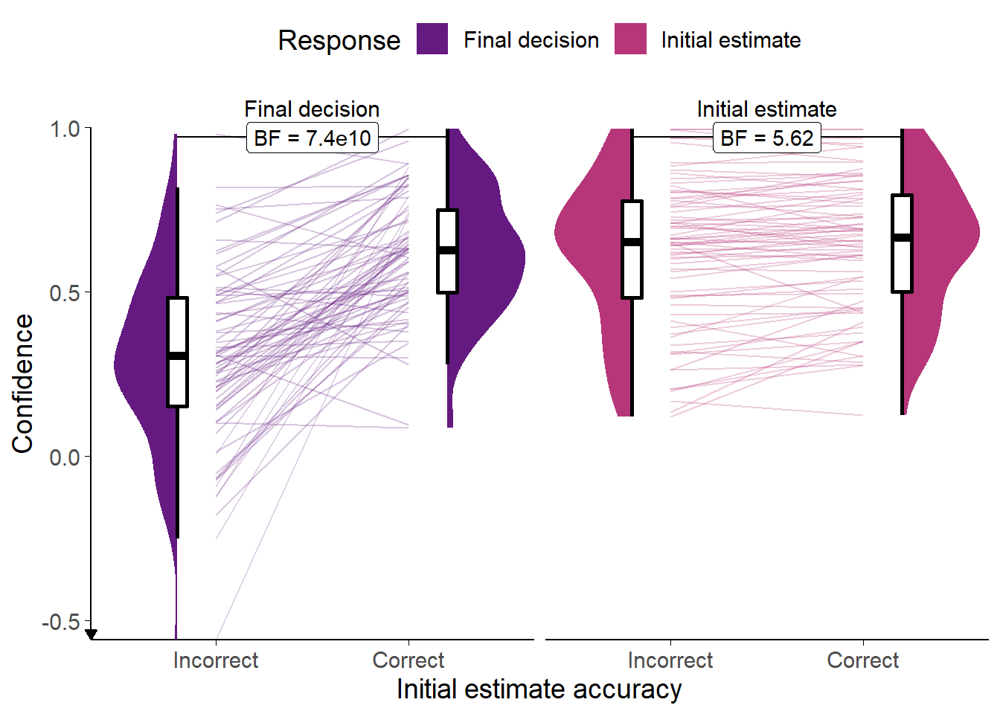
Figure 3.18: Confidence for the Dates task with dis/agreeing advisors.
Faint lines show individual participant means, for which the violin and box plots show the distributions. Final confidence is negative where the answer side changes. Theoretical range of confidence scores is initial: [0,1]; final: [-1,1].
There were some similarities to and some differences from the basic behavioural performances compared to the same Dates task in Experiment 1B§3.1.2.3.2. Participants’ accuracy (Figure 3.17), which was uncontrolled in this task, was greater on final decisions than on initial estimates (F(1,73) = 32.19, p < .001; MFinalDecision = 0.66 [0.63, 0.68], MInitialEstimate = 0.60 [0.57, 0.62]). There was no significant difference between advisors (F(1,73) = 3.28, p = .074; MHighAgreement = 0.61 [0.57, 0.64], MLowAgreement = 0.65 [0.62, 0.68]), but the increase in final decision accuracy was greater for the Low agreement advisor than the High agreement advisor (F(1,73) = 5.30, p = .024; MImprovement|HighAgreement = 0.04 [0.02, 0.06], MImprovement|LowAgreement = 0.09 [0.05, 0.12]).
As expected, and as shown in Figure 3.18 participants were systematically more confident when their initial estimate was correct as compared to incorrect (F(1,73) = 90.28, p < .001; MCorrect = 0.63 [0.58, 0.67], MIncorrect = 0.46 [0.41, 0.50]). Participants were less confident on final decisions than on initial estimates (F(1,73) = 61.19, p < .001; MFinalDecision = 0.46 [0.41, 0.50], MInitialEstimate = 0.63 [0.58, 0.68]), as expected given that the scale allows more scope for reducing than increasing confidence between initial estimate and final decision. This decrease in confidence was greater when the initial estimate was incorrect as compared to correct (F(1,73) = 67.07, p < .001; MIncrease|Correct = -0.03 [-0.06, 0.00], MIncrease|Incorrect = -0.32 [-0.39, -0.24]).
3.2.2.3.3 Advisor performance
| Advisor | Target|correct | Actual|correct | Target|incorrect | Actual|incorrect |
|---|---|---|---|---|
| High agreement | .900 | .874 | .650 | .612 |
| Low agreement | .750 | .761 | .350 | .334 |
| Advisor | Target accuracy | Mean accuracy |
|---|---|---|
| High agreement | .625 | .665 |
| Low agreement | .700 | .715 |
The advice is generated probabilistically from the rules described previously (Advice profiles§3.1.2.2.1). The advisors agreed with participants contingent on the accuracy of the participants’ initial estimates at close to the target rates (Table 3.15). This meant that advisors were distinguished by their overall agreement rates as they were intended to be in the familiarisation phase. The accuracy of participants’ initial estimates was not much above 50%, meaning that the overall accuracy rates of the advisors were similar to those projected (Table 3.16). Most (66/74, 89.19%) participants experienced the High agreement advisor as providing advice that agreed more frequently than the Low agreement advisor.
3.2.2.3.4 Hypothesis test
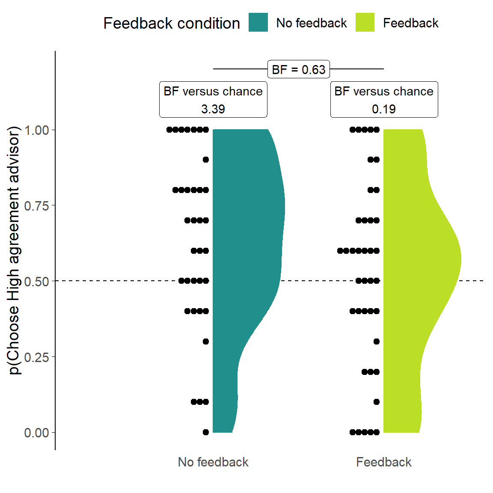
Figure 3.19: Dates task advisor choice for dis/agreeing advisors.
Participants’ pick rate for the advisors in the Choice phase of the experiment. The violin area shows a density plot of the individual participants’ pick rates, shown by dots. The chance pick rate is shown by a dashed line. Participants in the Feedback condition received feedback during the Familiarisation phase, but not during the Choice phase.
Consistent with the result from the Dots task, the key analysis demonstrated that in the No feedback condition participants’ preferences for receiving advice from the High agreement advisor were greater than chance (t(34) = 2.62, p = .013, d = 0.44, BFH1:H0 = 3.39; MNoFeedback = 0.63 [0.53, 0.73], \(\mu\) = 0.5). The modal preference was to select the High agreement advisor on every Choice trial, and although some participants still showed a preference for hearing advice from the Low agreement advisor, preferences for the High agreement advisor were generally stronger and more frequent (Figure 3.19).
In the Feedback condition, the mean of the participants’ selection rates was equivalent to random picking (t(38) = 0.46, p = .648, d = 0.07, BFH1:H0 = 1/5.24; MFeedback = 0.52 [0.42, 0.62], \(\mu\) = 0.5). This is consistent with a strategy which attempts to maximise the accuracy of final decisions, because neither advisor would help with this task systematically. The null result here does indicate, however, that there is no strong and clear preference for agreement over and above its accuracy benefits.
Interestingly, despite different patterns of preferences when compared to chance, there was not enough evidence to demonstrate whether the preference patterns for the two conditions were or were not different from one another. This may be a consequence of the variability of preferences: as with the Dates task using High accuracy and Low accuracy advisors (Experiment 1B§3.1.2), the participants in both Feedback and No feedback conditions spanned the entire gamut of preference strengths and directions. One participant in the No feedback group here, for example, never chose the High agreement advisor. Even where there were no systematic effects (No feedback condition in Experiment 1B, Feedback condition here), participants still had a range of preferences with some picking one or the other advisor exclusively. A substantial minority (33.8%) of participants had preference strengths beyond those expected by chance when picking randomly.11 As noted previously (Experiment 1: Discussion§3.1.3), this is in contrast to the behaviour in the Dots task, where preferences tend to mass towards even pick rates with a long tail differentiating the population preferences from chance.
3.2.3 Discussion
These two experiments investigated the impact of advisor agreement on choice of advice. In both Dots and Dates tasks, where the absence of feedback means advisors’ performances cannot be evaluated objectively, participants preferred High agreement advisors to Low agreement advisors. This is consistent with our underlying theory that agreement is used as a mechanism for evaluating advisors in the absence of objective feedback.
When feedback was provided in the Dates task, advisors were selected at rates equivalent to chance overall. Despite this overall chance level of preference in the sample, individual participants had a wide range of preference strengths and directions, and this was true for both the experimental conditions. This contrasts with what we see in the Dots task data, for both Experiment 1A§3.1.1 and 2A§3.2.1, where the majority of participants’ preferences are moderate, with a minority of participants’ more marked preferences producing the systematic effects.
In the Dates task, as we saw in Experiment 1B§3.1.2, systematic effects show up as a general nudging of preferences in one direction rather than as every participant developing similar preferences. This wide variability with some systematic nudging is explicable in terms of the heterogeneity of the Dates task. Participants will have a different level of knowledge on different questions, and we might expect advisors to occasionally offer implausible advice to questions participants consider easy. If this were to happen, participants might weight these occurrences highly, in line with the Pescetelli and Yeung (2021) theory of metacognitive evaluation of advice. More frequently disagreeing advisors will be more likely to disagree on these subjectively easy questions and suffer the reputational consequences. This greater likelihood could mean that the wide spread of behaviour from participants is due to the greater frequency of these important events for the Low accuracy advisor, rather than a consistent effect of agreement alone.
A challenge for this explanation is that in Experiment 1B§3.1.2 we observed participants in the No feedback condition demonstrating a range of preferences that were not systematically different from chance. We would expect, provided participants’ performance on subjectively easy questions is above chance, that the High accuracy advisor would have a higher probability of agreement on those questions, just as the High agreement advisor had a higher probability of agreement in Experiment 2B§3.2.2. It is unlikely, but not impossible, that participants’ accuracy even on subjectively easy questions was sufficiently bad as to render these effects undetectable.
Another reason why advisor preferences are so varied is that there are reasons why participants might prefer to see advice from the disagreeing advisor. In both Dots and Dates tasks, it was harder to predict what the Low agreement advisor would say, potentially making the advice more interesting. Furthermore, if participants thought they were unlikely to be correct, the Low agreement advisor’s advice was more diagnostic of the correct answer because the Low agreement advisor was far less likely to endorse incorrect responses. It may be, therefore, that people evaluate advisors on the basis of agreement, but that what they do on the basis of that evaluation is a matter of personal preference.
In the previous two studies we looked at the effects of advisor accuracy and agreement on the preference for picking those advisors when offered a choice. In order to isolate the effects, agreement was balanced in the accuracy experiments, and accuracy was balanced (as well as we were able) in the agreement experiments. Next, we directly contrast these domains by providing participants with a pairing consisting of a High accuracy advisor and a High agreement advisor, introducing a clear performance cost of preferring to hear advice from the High agreement advisor.
3.3 Effects of accuracy versus agreement
The High versus Low agreement advisor experiment showed that participants tended to prefer to receive agreeing advice when they did not receive feedback. The advisors did not differ in their accuracy (by design), which meant that participants could not increase their performance by selecting one advisor over another. Here we introduce a discrepancy between advisors’ objective performance (accuracy) and their subjective performance from the judge’s perspective (agreement). By playing off accuracy against agreement we can explore whether participants continue to prefer agreement when there is a cost associated with agreement through a reduction in overall accuracy. We expect that participants will gravitate towards the agreeing advisor who, from their perspective, should appear more accurate, despite the poorer objective performance of that advisor.
3.3.1 Experiment 3A: accuracy versus agreement effects in the Dots task
3.3.1.1 Open scholarship practices
This experiment was preregistered at https://osf.io/f3k4x.
The experiment data are available in the esmData package for R (Jaquiery 2021c), and also directly from https://osf.io/y47ec/.
A snapshot of the state of the code for running the experiment at the time the experiment was run can be obtained from https://github.com/oxacclab/ExploringSocialMetacognition/blob/c18c26b5da3622988e2261433cf256aae4d19f39/AdvisorChoice/ava.html.
3.3.1.2 Unanalysed data
An initial version of this study was conducted and run as a proper experiment in which participants learned about both advisors simultaneously (preregistered at https://osf.io/5z2fp), but there were no effects in the data.
We suspected the absence of effects was because participants had difficulty distinguishing the advisors when they were presented together.
The version of the experiment reported here presented one advisor per block in the familiarisation phase.
Data for the unreported null study can be found in the esmData R package (Jaquiery 2021c) and at https://osf.io/26yut/.
3.3.1.3 Method
89 participants each completed 277 trials over 6 blocks of the Dots task. Participants started with 2 blocks of 60 trials that contained no advice. The first three trials were introductory trials that explained the task. All trials in this section included feedback indicating whether or not the participant’s response was correct.
Participants then did 4 trials with a practice advisor. They were informed that they would “get advice from advisors to help you make your decision [original emphasis],” and that “advice is not always correct, but it is supposed to help you perform better on the task.”
Participants then performed 3 blocks of trials that made up the core experiment. There were 2 Familiarisation blocks of 60 trials, with participants seeing one of the two advisors for an entire block in random order. The Familiarisation block was followed with a Test block of 30 trials in which participants could choose between the advisors they encountered in the Familiarisation blocks.
3.3.1.3.1 Advice profiles
The two advisor profiles used in the experiment were High accuracy and High agreement. The advisors’ advice was stochastically generated according to the participant’s response. The advisor profiles were not balanced for overall agreement or accuracy rates.
The High accuracy advisor predominantly agreed with correct participant responses and disagreed with incorrect ones. The High agreement advisor agreed with the participant at the same rate regardless of the accuracy of the participant’s initial estimate. In practical terms, the difference between the advisors is that the High agreement advisor continued to agree with participants where their initial estimates were incorrect, while the High accuracy advisor did not (Table 3.17).
| Advisor | Participant correct | Participant incorrect | Overall | Overall accuracy |
|---|---|---|---|---|
| High accuracy | .800 | .200 | .626 | .800 |
| High agreement | .800 | .800 | .800 | .626 |
3.3.1.4 Results
3.3.1.4.1 Exclusions
| Reason | Participants excluded |
|---|---|
| Accuracy too low | 1 |
| Accuracy too high | 0 |
| Missing confidence categories | 6 |
| Skewed confidence categories | 18 |
| Too many participants | 14 |
| Total excluded | 39 |
| Total remaining | 50 |
In line with the pre-registration, participants’ data were excluded from analysis where they had an average accuracy below 0.6 or above 0.85, did not have choice trials in all confidence categories (bottom 30%, middle 40%, and top 30% of prior confidence responses), had fewer than 12 trials in each confidence category, or finish the experiment after 50 participants have already submitted data which passed the other exclusion tests. Overall, 39 participants were excluded, with the details shown in Table 3.18. This number is somewhat higher than in the previous experiments, but this is largely due to collecting data in larger batches than previously: a large number of participants were excluded because their data were in excess of the preregistered sample size.
3.3.1.4.2 Task performance
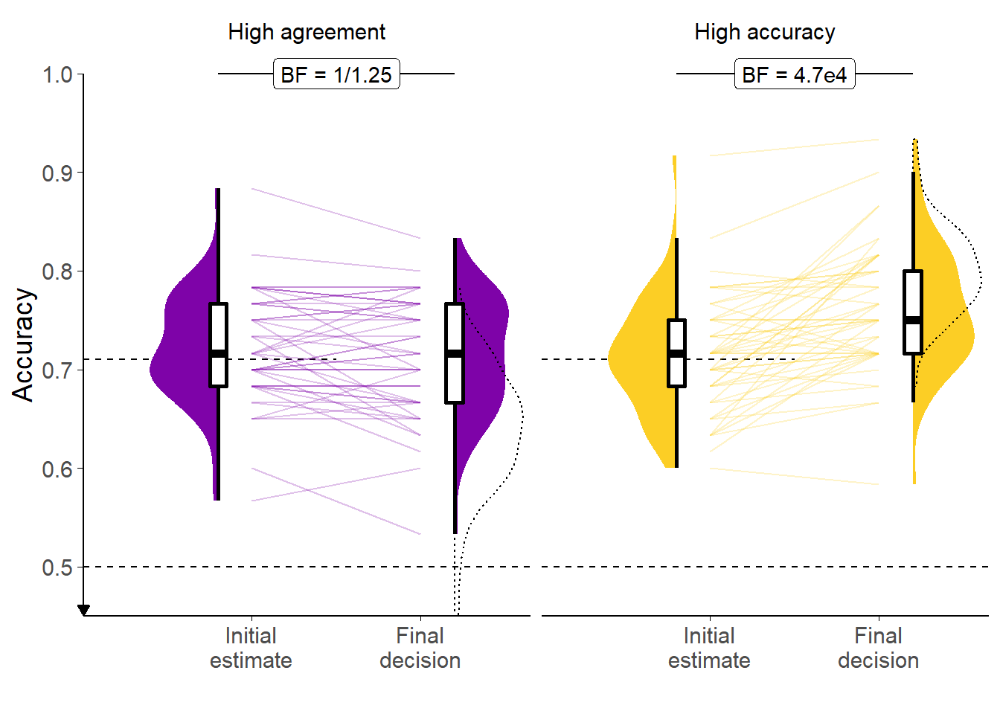
Figure 3.20: Response accuracy for the Dots task with agreeing versus accurate advisors.
Faint lines show individual participant means, for which the violin and box plots show the distributions. The half-width horizontal dashed lines show the level of accuracy which the staircasing procedure targeted, while the full width dashed line indicates chance performance. Dotted violin outlines show the distribution of actual advisor accuracy.
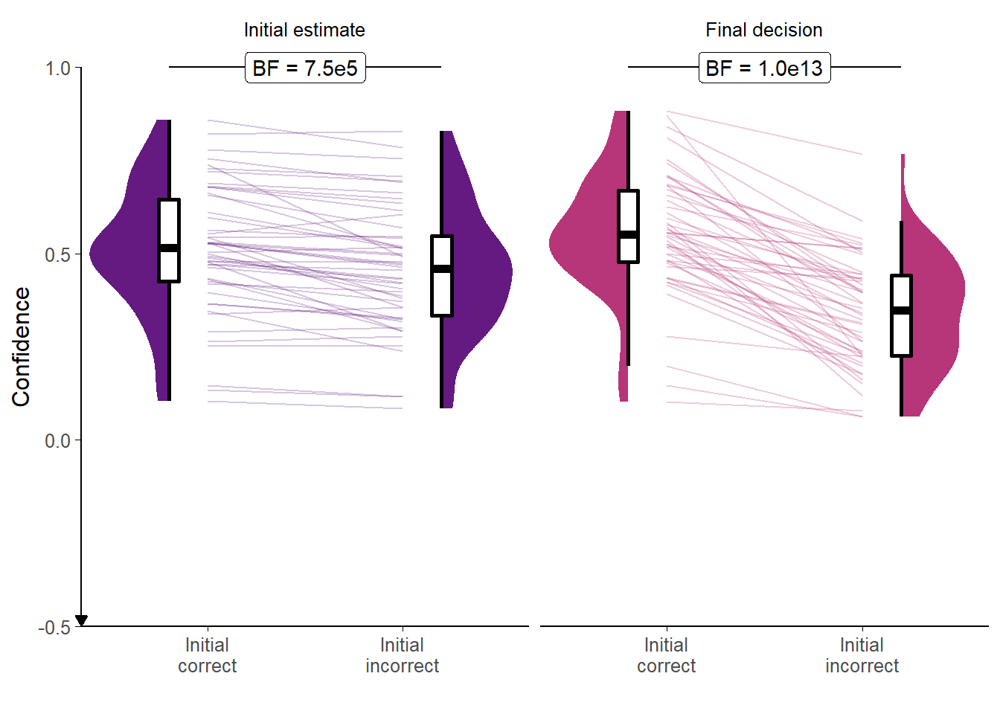
Figure 3.21: Confidence for the Dots task with agreeing versus accurate advisors.
Faint lines show individual participant means, for which the violin and box plots show the distributions. Final confidence is negative where the answer side changes. Theoretical range of confidence scores is initial: [0,1]; final: [-1,1].
Basic behavioural performance was similar to that observed with the same Dots task in Experiments 1A§3.1.1.3.2 and 2A§3.2.1.3.2. Initial estimate accuracy converged on the target 71%, and, as shown in Figure 3.20, participants benefited from advice in terms of their final decisions being more accurate than their initial estimates (ANOVA main effect of Time: F(1,49) = 16.63, p < .001; MFinal = 0.74 [0.72, 0.75], MInitial = 0.72 [0.71, 0.73]), especially following advice from the High accuracy advisor (interaction of Time and Advisor: F(1,49) = 33.88, p < .001; MImprovement|HighAgreement = -0.01 [-0.02, 0.00], MImprovement|HighAccuracy = 0.05 [0.03, 0.06]). There was no main effect of Advisor (F(1,49) = 3.42, p = .070; MHighAgreement = 0.72 [0.70, 0.73], MHighAccuracy = 0.74 [0.72, 0.75]).
Figure 3.21 and ANOVA indicated that participants were more confident in their correct answers than their incorrect ones (F(1,49) = 139.32, p < .001; MCorrect = 26.60 [24.28, 28.92], MIncorrect = 19.94 [17.81, 22.08]), and less confident in their final decisions than their initial estimates (F(1,49) = 10.64, p = .002; MFinal = 22.36 [20.31, 24.42], MInitial = 24.18 [21.80, 26.57]), and that these two factors interacted (F(1,49) = 90.55, p < .001; MIncrease|Correct = 2.05 [0.88, 3.22], MIncrease|Incorrect = -5.70 [-7.28, -4.12]). There was no evidence of a correlation between initial estimate accuracy and confidence (1/1.69), and no evidence for a correlation between final decision accuracy and confidence (1/2.30).
3.3.1.4.3 Advisor performance
The advice is generated probabilistically from the rules described previously in Table 3.17. It is thus important to get a sense of the actual advice experienced by the participants.
| Advisor | Target|correct | Actual|correct | Target|incorrect | Actual|incorrect |
|---|---|---|---|---|
| High accuracy | .800 | .804 | .200 | .208 |
| High agreement | .800 | .812 | .800 | .804 |
| Advisor | Target accuracy | Mean accuracy |
|---|---|---|
| High accuracy | .800 | .800 |
| High agreement | .626 | .640 |
The advisors agreed with the participants’ initial estimates at close to target rates (Table 3.19), and were as accurate on average as expected (Table 3.20).
49/50 participants experienced the intended relationship wherein the High agreement advisor agreed with them more than the High accuracy advisor and the High accuracy advisor gave more accurate advice than the High agreement advisor.
3.3.1.4.4 Hypothesis test
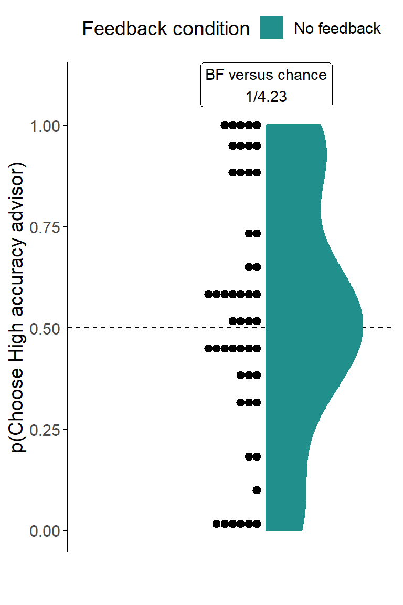
Figure 3.22: Dot task advisor choice for accurate versus agreeing advisors.
Participants’ pick rate for the advisors in the Choice phase of the experiment. The violin area shows a density plot of the individual participants’ pick rates, shown by dots. The chance pick rate is shown by a dashed line.
Despite the influence differences observed above, and counter to our predictions, Figure 3.22 shows that there was no consistent picking preference in favour of either the High accuracy or the High agreement advisor. While several participants did develop very strong preferences, picking one or the other advisor nearly all the time, these preferences were not systematically oriented towards either advisor (t(49) = 0.95, p = .345, d = 0.13, BFH1:H0 = 1/4.23; M = 0.54 [0.45, 0.63], \(\mu\) = 0.5).
For context, note that we did see a significant effect of picking the advisor in the first position on the screen (t(49) = 2.65, p = .011, d = 0.37, BFH1:H0 = 3.49; MP(PickFirst) = 0.54 [0.51, 0.56], \(\mu\) = 0.5), an effect that we would hope would be random and even out across participants. In this experiment, as a function of chance, the High accuracy advisor appeared in the favoured top position less frequently than we would expect (BFH1:H0 = 3.49; MP(HighAccuracyFirst) = 0.46 [0.44, 0.49], \(\mu\) = 0.5). If there were a general preference for the High agreement advisor, as per our prediction, this would be increased by that advisor appearing more often in the top position. Thus, even if the position of the advisors affected the results, it would not be confounding results in the direction of our prediction.
3.3.1.4.5 Follow-up tests
3.3.1.4.5.1 Ability of participants
Although participants did not have a clear preference for the agreeing over the accurate advisor, it may be the case that participants who were well-calibrated were able to detect the usefulness of the accurate advisor, and therefore tended to prefer to hear that advisor’s advice. The evidence was not sufficient to draw firm conclusions, but there was little indication of a correlation between preference for the High accuracy advisor and participant accuracy (r(48) = -.071, p = .623, BFH1:H0 = 1/2.81) or confidence calibration (r(48) = .106, p = .463, BFH1:H0 = 1/2.46).
3.3.1.4.5.2 Experience of advisors
The lack of systematic preference from the participants was surprising. Each participant’s data were tested against a null hypothesis that their picking was random, and 52.0% of participants demonstrated a statistically significant preference. As seen in Figure 3.22, however, these preferences were quite evenly split between the High accuracy and the High agreement advisors, both in terms of frequency and strength (although with a slight advantage for the High accuracy advisor).
The wide variation in preferences was not significantly correlated with either experienced agreement (r = .035, p = .810) or experienced accuracy (r = .162, p = .262).
3.3.1.4.6 Summary
Contrary to expectations, participants did not appear to use advice agreement as a proxy for advice accuracy when objective feedback was not available. Whereas in the previous experiment (2A§3.2.1.3.4) this did happen, in the current experiment there was a cost to seeking advice from the High agreement advisor: the advice was less accurate.
It is not clear whether some participants were aware of the accuracy difference by some mechanism other than agreement. It is possible that, as suggested by Pescetelli and Yeung (2021), participants were able to use a combination of their subjective confidence and advice agreement to determine advisors’ accuracy. This is explored more in Experiment 4A§3.4.2.
The preferences for advisors in the previous Dots task experiments, Experiment 1A§3.1.1.3.4 and Experiment 2A§3.2.1.3.4, showed clustering of preferences around the midpoint; participants generally had mild preferences. In contrast, in the present experiment, there was a wide range of preference strengths, but these were distributed evenly between the two advisors. It seems probable that participants in the current experiment were sensitive to differences between the advisors, but that their response to these differences was not uniform.
The next experiment explores the contrasted High agreement and High accuracy advisors in the Dates task.
3.3.2 Experiment 3B: accuracy versus agreement effects in the Dates task
This experiment explored preferences for accuracy versus agreement using the continuous version of the Dates task introduced in Experiment 0§B.1. The continuous task was used because we aimed to investigate both advisor influence and advisor choice as dependent variables. Once again, participants were separated into Feedback and No feedback conditions.
3.3.2.1 Open scholarship practices
This experiment was preregistered at https://osf.io/nwmx5.
This is a replication of a study of identical design.
The data for this and the original study can be obtained from the esmData R package (Jaquiery 2021c).
A snapshot of the state of the code for running the experiment at the time the experiment was run can be obtained from https://github.com/oxacclab/ExploringSocialMetacognition/blob/ed13951c488e1996df7ff53d48629843bacfd074/ACv2/ac.html.
3.3.2.2 Method
49 participants each completed 52 trials over 4 blocks of the continuous version of the Dates task§2.1.3.2.2. On each trial, participants were presented with an historical event that occurred on a specific year between 1900 and 2000. They were asked to drag one of three markers onto a timeline to indicate the date range within which they thought the event occurred. The three markers each had different widths, and each marker had point value associated with it, with wider markers worth fewer points. The markers were 7, 13, and 21 years wide, being worth 25, 10, and 5 points respectively. Participants then received advice indicating a region of the timeline in which the advisor suggested the event occurred. Participants could then mark a final response in the same manner as their original response, and could choose a different marker width if they wished.
Participants started with 1 block of 10 trials that contained no advice to allow them to familiarise themselves with the task. All trials in this section included feedback for all participants indicating whether or not the participant’s response was correct.
Participants then did 2 trials with a practice advisor to get used to receiving advice. They also received feedback on these trials. They were informed that they would “get advice on the answers you give” and that the feedback they received would “tell you about how well the advisor does, as well as how well you do.” Before starting the main experiment they were told that they would receive advice from multiple advisors and that “advisors might behave in different ways, and it’s up to you to decide how useful you think each advisor is, and to use their advice accordingly.”
Participants then performed 3 blocks of trials that constituted the main experiment. The first two of these were Familiarisation blocks where participants had a single advisor in each block for 14 trials, plus 1 attention check.
Participants were split into four conditions that produced differences in their experience of these Familiarisation blocks. These conditions were whether or not they received feedback, and which of the two advisors they were familiarized with first. For each advisor, participants saw the advisor’s advice on 14 trials. On most of these trials, including the first two, the advisor gave advice according to the advice profile (detailed below). On between 2 and 3 trials, the advisors issued the same kind of advice as one another, chosen to neither agree with the participant’s answer nor indicate the correct answer. This “Off-brand” advice was used to control for the effects of advice when the influence of advice was the dependent variable.
Finally, participants performed a Test block of 10 trials that offered them a choice on each trial of which of the two advisors they had encountered over the last two blocks would give them advice. No participants received feedback during the test phase, and all advisors gave on-brand advice according to their advice profile.
3.3.2.2.1 Advice profiles
The High accuracy and High agreement advisor profiles defined marker placements based on the timeline based on the correct answer and the participant’s initial estimate respectively. Both advisors used markers that spanned 7 years, and both placed the markers in a normal distribution around the target point with a standard deviation of 5 years. The target point for the High accuracy advisor was the correct answer, and the target point for the High agreement advisor was the participant’s initial estimate. Neither advisor ever placed their marker exactly on the midpoint of the participant’s marker (because doing so means the weight on advice statistic is undefined).
Note that just as the task is continuous rather than binary, so agreement is continuous rather than binary. There is no objective threshold at which to classify advice as ‘agreement,’ although we can classify accuracy in a binary way as whether or not a marker includes the correct answer.
On Off-brand advice trials, of which there were between 2 and 3 per Familiarisation block, advisors neither indicated the correct answer nor agreed with the participant. This was achieved by picking a target point of the participant’s answer reflected around the correct answer. A detailed example was given in Experiment 0§B.1.0.2.1.
3.3.2.3 Results
3.3.2.3.1 Exclusions
| Reason | Participants excluded |
|---|---|
| Too few trials | 0 |
| Insufficient advice-taking | 0 |
| Too few choice trials | 0 |
| Wrong markers | 2 |
| Non-numeric advice | 0 |
| Total excluded | 2 |
| Total remaining | 33 |
Individual trials were screened to remove those that took longer than 60s to complete. Participants were then excluded for having fewer than 11 trials remaining, fewer than 8 trials on which they had a choice of advisor, or for giving the same initial and final response on more than 90% of trials. Participants were also excluded for technical problems with the experiment and data: sometimes the widths of the markers placed by the participants had unrecognised values, and sometimes the values for the advisors’ advice were corrupted. Overall, 2 participants were excluded, with the details shown in Table 3.21.
3.3.2.3.2 Task performance
![Response error for the Dates task with accurate versus agreeing advisors.<br/> Faint lines show individual participant mean error (the absolute difference between the participant's response and the correct answer), for which the violin and box plots show the distributions. The dashed line indicates chance performance. Dotted violin outlines show the distribution of participant means on the original study which this is a replication. The dependent variable here is error, the distance between the correct answer and the participant's answer, and consequently lower values represent better performance. The theoretical limit for error is around 100.](_main_files/figure-html/ac-ava-dates-r-performance-acc-1.png)
Figure 3.23: Response error for the Dates task with accurate versus agreeing advisors.
Faint lines show individual participant mean error (the absolute difference between the participant’s response and the correct answer), for which the violin and box plots show the distributions. The dashed line indicates chance performance. Dotted violin outlines show the distribution of participant means on the original study which this is a replication. The dependent variable here is error, the distance between the correct answer and the participant’s answer, and consequently lower values represent better performance. The theoretical limit for error is around 100.
![Error by marker width for the Dates task with accurate versus agreeing advisors.<br/> Faint lines show individual participant mean error (distance from the centre of the participant's marker to the correct answer) for each width of marker used, and box plots show the distributions. Some participants did not use all markers, and thus not all lines connect to each point on the horizontal axis. The dashed box plots show the distributions of participant means in the original experiment of which this is a replication. The faint black points indicate outliers. Grey bars show half of the marker width: mean error scores within this range mean the marker covers the correct answer.](_main_files/figure-html/ac-ava-dates-r-performance-conf-1.png)
Figure 3.24: Error by marker width for the Dates task with accurate versus agreeing advisors.
Faint lines show individual participant mean error (distance from the centre of the participant’s marker to the correct answer) for each width of marker used, and box plots show the distributions. Some participants did not use all markers, and thus not all lines connect to each point on the horizontal axis. The dashed box plots show the distributions of participant means in the original experiment of which this is a replication. The faint black points indicate outliers. Grey bars show half of the marker width: mean error scores within this range mean the marker covers the correct answer.
In this section, task performance is explored during the Familiarisation phase of the experiment where participants received advice from a pre-specified advisor on each trial. There were an equal number of these trials for each participant for each advisor.
Participants generally improved their response accuracy following advice; they had lower error on final decisions than on their initial estimates (F(1,32) = 69.02, p < .001; MInitial = 15.84 [13.80, 17.89], MFinal = 10.28 [8.87, 11.69]). They also had lower error on their answers with the High accuracy advisor (F(1,32) = 5.73, p = .023; MHighAgreement = 14.28 [11.86, 16.71], MHighAccuracy = 11.84 [10.61, 13.07]). As expected, there was an interaction: participants reduced their error much more following advice from the High accuracy advisor (F(1,32) = 60.26, p < .001; MReduction|HighAgreement = 1.46 [0.05, 2.87], MReduction|HighAccuracy = 9.67 [7.66, 11.68]; Figure 3.23).
Generally, we expect participants to be more confident on trials on which they are correct compared to trials on which they are incorrect. Confidence can be measured by the width of the marker selected by the participant. Where participants are more confident in their response, they can maximise the points they receive by selecting a thinner marker. Where participants are unsure, they can maximise their chance of getting the answer correct by selecting a wider marker. Participants’ error was lower for each marker width in final decisions than initial estimates (Figure 3.24). For both initial estimates and final decisions, error was higher for wider markers than for narrower ones.
3.3.2.3.3 Advisor performance
The advice is generated probabilistically so it is important to check that the advice experienced by the participants matched the experience we designed. On average, the High accuracy advisor had lower error than the High agreement advisor (t(32) = -8.75, p < .001, d = 2.22, BFH1:H0 = 2.0e7; MHighAccuracy = 6.02 [5.55, 6.48], MHighAgreement = 15.30 [13.25, 17.35]), and their advice was further away from the participants’ initial estimates than the High accuracy advisor’s (t(32) = 12.47, p < .001, d = 2.24, BFH1:H0 = 9.0e10; MHighAccuracy = 20.28 [18.21, 22.35], MHighAgreement = 9.59 [8.39, 10.80]). 32/33 (96.97%) participants experienced the High accuracy advisor as having lower average error than the High agreement advisor, and 33/33 (100.00%) participants experienced the High agreement advisor as offering advice closer to their initial estimates than the High accuracy advisor. Overall, this indicates that the manipulation was implemented as planned.
3.3.2.3.4 Hypothesis test
![Dates task advisor choice for accurate versus agreeing advisors.<br/> Participants' pick rate for the advisors in the Choice phase of the experiment. The violin area shows a density plot of the individual participants' pick rates, shown by dots. The chance pick rate is shown by a dashed line. Participants in the Feedback condition received feedback during the Familiarisation phase, but not during the Choice phase. The dotted outline indicates the distribution of participant means in the original experiment of which this experiment is a replication.](_main_files/figure-html/ac-ava-dates-r-graph-1.png)
Figure 3.25: Dates task advisor choice for accurate versus agreeing advisors.
Participants’ pick rate for the advisors in the Choice phase of the experiment. The violin area shows a density plot of the individual participants’ pick rates, shown by dots. The chance pick rate is shown by a dashed line. Participants in the Feedback condition received feedback during the Familiarisation phase, but not during the Choice phase. The dotted outline indicates the distribution of participant means in the original experiment of which this experiment is a replication.
Consistent with the result from the Dots task (Experiment 3A§3.3.1), in the No feedback condition participants’ preferences for receiving advice from the High accuracy advisor were not different from chance (t(13) = -0.16, p = .879, d = 0.04, BFH1:H0 = 1/3.66; MNoFeedback = 0.49 [0.29, 0.68], \(\mu\) = 0.5) on average, and varied widely across individual participants: participant preferences in the No feedback condition were almost perfectly evenly distributed, both in terms of which advisor was preferred and the strength of that preference, in both the original study and the replication (Figure 3.25).
In the Feedback condition, in contrast, the mean of the participants’ selection rates clearly favoured the High accuracy advisor (t(18) = 5.00, p < .001, d = 1.15, BFH1:H0 = 297; MFeedback = 0.81 [0.68, 0.94], \(\mu\) = 0.5). This is consistent with a strategy which attempts to maximise the accuracy of final decisions. This qualitative difference from the No feedback condition also translated into a statistical difference: the two preference distributions were clearly different from one another (t(23.95) = 2.92, p = .007, d = 1.07, BFH1:H0 = 8.79; MFeedback = 0.81 [0.68, 0.94], MNoFeedback = 0.49 [0.29, 0.68]).
3.3.2.3.5 Advisor influence

Figure 3.26: Date task advisor WoA for accurate versus agreeing advisors.
Participants’ weight on the advice for advisors in the Familiarisation phase of the experiment. The shaded area and boxplots indicate the distribution of the individual participants’ mean influence of advice. Individual means for each participant are shown with lines in the centre of the graph. The dotted outline indicates the distribution of participant means in the original experiment of which this experiment is a replication.
We included in our design a subset of trials on which advisors offered the same kind of advice.12 This meant that we could investigate the influence of the advisors while controlling for differences in their advice. Examining the influence of these Off-brand trials indicated that the High accuracy advisor was more influential than the High agreement advisor (F(1,30) = 6.08, p = .020; MHighAccuracy = 0.62 [0.53, 0.72], MHighAgreement = 0.50 [0.40, 0.59]). This difference was more pronounced in the Feedback condition (F(1,30) = 15.82, p < .001; MAccuracy-Agreement|Feedback = 0.30 [0.17, 0.44], MAccuracy-Agreement|NoFeedback = -0.10 [-0.28, 0.07]). There was no evidence of a main effect of condition, however (F(1,30) = 4.12, p = .051; MFeedback = 0.50 [0.42, 0.58], MNoFeedback = 0.64 [0.51, 0.76]).
3.3.3 Discussion
Whereas previous experiments assessed the separate effects of advisor accuracy (1A§3.1.1 and 1B§3.1.2) and agreement (2A§3.2.1 and 2B§3.2.2), in these two experiments these factors were set in opposition. The results were clear when feedback was provided (in the Dates task), indicating that people are capable of attending to challenging but useful information provided they have a chance to learn that the information is actually useful. In contrast, when people are not given objective feedback against which to evaluate the advice they receive, there does not seem to be a systematic response: some people seek agreement while others seek alternate perspectives, and the extent to which each strategy is pursued to the exclusion of the other is also highly variable. It is an open question whether a person’s strategy choice in the absence of useful cues as to the utility of the information they receive is due to random selection or related in a meaningful way to their personality or cognitive style.
The distributions of preferences were compatible with but slightly different to those seen in the previous experiments. In neither Experiment 1A§3.1.1 nor 2A§3.2.1 did we see a null effect of choice, so it is not clear whether that would look like random picking or, as it does here, a similar range of preference directions and strengths to those seen in the Dates task. The Dots task distribution seen here might be expected, given no systematic preferences, to cluster around the middle, representing the drives for fairness, novelty, etc. as discussed in previous chapters. The Dates task distribution is more in keeping with previous experiments: the expected range of preference directions and strengths is there in the absence of a systematic preference. In the Feedback condition where systematic differences are seen, we still see the entire range of preference directions and strengths, as we did before, although the clustering towards the High accuracy advisor is much more pronounced than in previous experiments. This clustering of the distribution suggests that the manipulation worked more effectively in this experiment, perhaps because of the use of the continuous Dates task: participants may have experienced the visual depiction of a distance between their estimate and the advice as a stronger signal than binary agreement or disagreement.
The results of the advisor choice behaviour in this experiment conceptually replicate the advisor influence results in Experiment 0 (Appendix 2§B), and the influence results in the Dates task similarly replicate those findings. While this study was not set up to examine influence rigorously, the inclusion of trials where the advisors offered equivalent advice allowed us to explore advisor influence without the confound of differences in the nature of the advice itself. We found, in two preregistered studies, that participants in the Feedback condition discriminated between their advisors, being more influenced by the accurate rather than agreeing advice. Contrary to our hypothesis, however, we found that participants in the No feedback condition either did not discriminate (original) or did not provide evidence of discrimination (replication).
The similarity of these results to those of the previous study is encouraging, although once again the methodology does not entirely equate the advice between the advisors. Although advice on the Off-brand trials is constructed using the same rules for each advisor, Off-brand advice from the High agreement advisor will be much more surprising than Off-brand advice from the High accuracy advisor, because participants will usually have experienced the High accuracy advisor offering advice that deviates dramatically from their initial estimates whereas they will not have experienced this from the High agreement advisor. Assuming that participants in the No feedback condition have no better insight into the correct answer than they offer with their estimate, advice from the High agreement advisor may be discounted simply because it deviates more from the perceived correct answer than usual. Participants in the No feedback condition may also feel reassured by the High agreement advisor that they are good at the task, and thus reduce their reliance on advice. It is possible, in sum, for participants in the No feedback condition to suffer suppression of influence on Off-brand trials specifically for the High agreement advisor, which would lead to genuine influence effects being difficult to detect.
Another consideration is that the Off-brand advice trials that the influence analysis is based on occur during the Familiarisation phase when participants are learning about the advisors. Participants in the Feedback condition appear to have learned rapidly that the advice of the High accuracy advisor is worth following, and the advice of the High agreement advisor is not informative. There is a slight suggestion from the individual participant data that many of the participants in the No feedback condition may have been creeping towards this conclusion, but the statistics are uninformative on the question. It is highly plausible that learning with feedback is far more rapid than learning without feedback, especially in noisy and heterogeneous tasks.
Whereas the previous experiments demonstrated that participants denied feedback would prefer to pick the High agreement advisor, that did not happen in this experiment. Together with the above, this might indicate that even without feedback participants were sensitive to the accuracy of advice over and above agreement. The Pescetelli and Yeung (2021) theory of metacognitive advice evaluation supports this because confidence is used to assess advice plausibility. Where people receive agreeing advice on questions that they feel confident about, they will consider the advice as highly likely to be accurate, whereas when they themselves are very unsure of the answer they will not learn very much about the advisor from the advice whether it agrees or not.
It is this confidence-based assessment of advice that we attempted to test in the next experiments using advisors whose advice was generated depending on the participant’s confidence in their initial estimate.
3.4 Effects of confidence-contingent advice
The results of the experiments described previously (1A§3.1.1, 1B§3.1.2, 2A§3.2.1, 2B§3.2.2, 3A§3.3.1, 3B§3.3.2) were mixed, but indicated overall (and in combination with Pescetelli and Yeung 2021) that people prefer accurate over inaccurate advisors when they can assess the advisors based on feedback, but prefer agreeing over disagreeing advisors when feedback is absent. Here we test whether advice selection can depend on a more sophisticated mechanism when feedback is absent.
This mechanism, proposed by Pescetelli and Yeung (2021), weights the updating of trust in an agreeing advisor using the confidence of the judge’s initial estimate. Where the initial estimate is made with high confidence, agreement is taken to indicate that the advisor has a high probability of being correct, while disagreement is taken to indicate that the advisor has a low probability of being correct. Where the initial estimate is low confidence, however, neither agreement nor disagreement is a good indicator of correctness. This intuition accords neatly with a Bayesian approach: the greater the uncertainty around whether or not the advice is correct, the lower the strength of the updating of trust in the advisor.
This mechanism can be directly tested by using advisors who have different agreement rates contingent upon the judge’s confidence in their initial estimate, and Pescetelli and Yeung (2021) used just such an approach to provided evidence for the mechanism in the domain of advisor influence. Here, a very similar design is used to explore this effect in the domain of advisor choice.
Unlike the previous experiments, in which the same approach was implemented in both the Dots and the Dates tasks, this experiment uses only the Dots task. To balance the advisors’ accuracy and agreement rates (such that only their confidence-contingent agreement is varied), precise control is required over the participants’ initial estimate accuracy. Such control is achieved using a staircasing procedure in the Dots task, and cannot be done in the Dates task (because there are too few questions to choose from, the questions have too wide a range of difficulty, and a question’s difficulty varies dramatically and unpredictably between participants).
Instead of a Dots and a Dates task, this experiment is repeated in two versions of the Dots task. The first version, directly adapted from Pescetelli and Yeung (2021), was performed in the lab with a correspondingly low sample size and high number of trials per participant. The second version was a replication run on-line and with a larger sample size and lower number of trials per participant. For ease of reference, the lab study is referred to as ‘Lab study,’ while the on-line study retains the numbering and lettering used previously, meaning it is designated Experiment 4A. There is no Experiment 4B, because it was not possible to use the Dates task with this design of advisors.13
3.4.1 Lab study of confidence-contingent advice
Pescetelli and Yeung (2021) used a judge-advisor system to demonstrate that judges are influenced to a greater extent by advisors who share their biases. Participants played the role of judge in a judge-advisor system, while the advisors were virtual agents whose advice-giving was dependent upon the confidence and correctness of the judges’ initial estimates. The advisors were balanced for both overall agreement with the judge and objective correctness of advice. This was achieved by varying the agreement rates for the advisors contingent on the confidence of the judge’s initial estimate. The Bias-sharing advisor would agree more frequently when the participant expressed high confidence in their initial estimate and less frequently when the participant expressed low confidence in their initial estimate. The Anti-bias advisor did the opposite. Crucially, the advisors were matched in agreement when participants were moderately confident in their initial estimates, allowing the advisors to be compared directly on these trials (Pescetelli and Yeung 2021). We place participants in a similar paradigm in which they are given a choice between advisors, and hypothesise that they will more frequently seek advice from the Bias Sharing advisor than from the Anti Bias advisor. We predict that, given a choice, judges will prefer to receive advice from a Bias Sharing advisor over receiving advice from an advisor who does not share the judge’s bias.
3.4.1.1 Open scholarship practices
This experiment was preregistered at https://aspredicted.org/ze3tn.pdf.
One analysis in the preregistration is not reported here because the results are non-significant and they represented a branch of analysis that we sidelined in other experiments.
This analysis explored participants’ subjective assessments of advisors.
The experiment data are available in the esmData package for R (Jaquiery 2021c), and also directly from https://osf.io/vgcnb/.
The code for running the experiment can be obtained from https://github.com/mjaquiery/nofeedback_trust.
3.4.1.2 Method
The method for the lab study was different in many small ways from the general method used for the Dots task on-line. The basic trial experience was the same: participants saw two boxes of dots flashed briefly on the screen, and were asked to indicate which box had more dots, along with how confident they were in this initial estimate. Participants then received advice and provided a final decision. On some trials participants were able to choose which of their advisors would provide the advice (Figure 3.27).
![Experiment 1 procedure.<br/> The task began with a blank screen containing only a fixation cross and progress bar. Momentarily prior to the onset of the stimuli the fixation cross flickered. The stimuli, two rectangles containing approximately 200 dots each, appeared for 0.16s, one on either side of the fixation cross. Once the stimuli disappeared, a response-collection screen appeared and prompted the participant to indicate their initial estimate and its confidence by selecting a point within one of two regions. Next, the participant was presented with a choice screen. The choice screen displayed two images, one at the top of the screen and one at the bottom. The images were one of the following: an advisor portrait, a silhouette, or a red cross. The red cross was not selectable, forcing participants to choose the other option. The silhouette offered no advice, and was only ever offered as a forced choice. Selecting an advisor image provided the participant with the opinion of that advisor on the trial.<br/> Having heard the advice, the participant was again presented with the response-collection screen, with a yellow indicator marking their original response. A second (final) judgement was collected using this screen (except on catch trials), and the trial concluded.](figures/experiment_01_MATLAB/paradigm.jpg)
Figure 3.27: Experiment 1 procedure.
The task began with a blank screen containing only a fixation cross and progress bar. Momentarily prior to the onset of the stimuli the fixation cross flickered. The stimuli, two rectangles containing approximately 200 dots each, appeared for 0.16s, one on either side of the fixation cross. Once the stimuli disappeared, a response-collection screen appeared and prompted the participant to indicate their initial estimate and its confidence by selecting a point within one of two regions. Next, the participant was presented with a choice screen. The choice screen displayed two images, one at the top of the screen and one at the bottom. The images were one of the following: an advisor portrait, a silhouette, or a red cross. The red cross was not selectable, forcing participants to choose the other option. The silhouette offered no advice, and was only ever offered as a forced choice. Selecting an advisor image provided the participant with the opinion of that advisor on the trial.
Having heard the advice, the participant was again presented with the response-collection screen, with a yellow indicator marking their original response. A second (final) judgement was collected using this screen (except on catch trials), and the trial concluded.
Overall, 26 participants were recruited from the University of Oxford participant recruitment platforms took part in the experiment and attended experimental sessions. 1 participant was excluded because the preregistered sample size had already been met when their data were collected, and one participant’s data was lost due to technical issues. The remaining participants had an average age of 21.75 (±SD 4.7). Their self-identified genders were give as 5 male, 19 female, 0 other. Participants were compensated for their time with either course credit for a psychology degree, or 10GBP.
Each participant completed 363 trials (51 practice trials over 2 blocks + 12 x 26-trial experimental blocks). Prior to the first experimental block, after the final experimental block, and after the 4th and 8th experimental blocks, participants were presented with a questionnaire (Figure 3.28). The questionnaire contained 4 questions for each advisor. The questions asked for the judge’s assessment of the advisor’s likeability, trustworthiness, influence, and ability to do the task. The questions presented before the first experimental block were worded prospectively (e.g. ‘How much are you going to like this person?’ as opposed to ‘How much do you like this person?’). Answers were provided by moving a sliding scale below the advisor’s portrait towards the right for more favourable responses (marked ‘extremely’) or towards the left for less favourable responses (marked ‘not at all’).
The blocks contained a mixture of choice, forced, and catch trials. On choice trials, participants had a choice between the two advisors giving advice on that block, and were able to select whichever they preferred by clicking the advisor’s portrait. The relative frequency of selection on these trials provided our dependent variable of advisor choice. On forced trials, participants were faced with the advisor choice screen, but only one option was available. Participants could only continue when they selected the available portrait. These trials were included to allow measuring of the influence of advice without the confound of having just chosen the advisor over another advisor. Catch trials were included to encourage participants to respond accurately in their initial estimates: on these trials they were forced to select a blank advisor portrait and received no advice; their initial estimate became their final decision automatically.
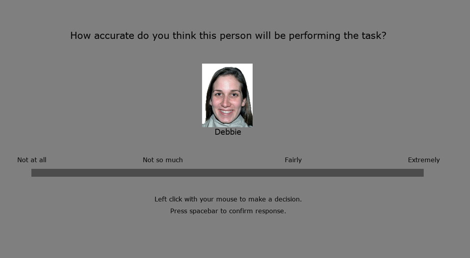
Figure 3.28: Experiment 1 advisor questionnaire.
Participants rated advisors on a number of different dimensions.
Each participant attended the experiment individually, was welcomed and briefed on the experimental procedure, and had their informed consent recorded, before the experiment began. They were seated a comfortable distance in front of a 24’ (1440x900 resolution) computer screen in a small, quiet, and dimly-lit room. The experiment took place wholly on the computer, and lasted around 45 minutes.
The experiment was programmed in MATLAB R2017b (MATLAB 2017) using the Psychtoolbox-3 package (Kleiner, Brainard, and Pelli 2007).
3.4.1.2.1 Key differences from on-line version
There were several differences from the on-line version of the task that are worth mentioning. First, there were more trials and the experiment took longer to complete. Second, when the participant was forced to have advice from one or other advisor, they were presented with the advisor choice screen and one of the options was a blank advisor that they were unable to select. This meant that advisor influence on the forced trials could be analysed as compared to choice trials. Third, 8% of trials were catch trials on which no advice was offered. Fourth, the questionnaires were more detailed and more numerous, and contained no free text fields. Fifth, participants had the opportunity to discuss the experiment with the experimenter after the experiment was complete, although none made use of this opportunity.
3.4.1.2.2 Advice profiles
The two advisor profiles used in the experiment were Bias sharing and Anti-bias. The advisors are balanced for their overall accuracy and agreement rates, but the Bias sharing advisor agrees more frequently with participants when their initial estimate is correct and made with relatively high confidence. The Anti-bias advisor agrees more frequently with participants when their initial estimate is correct and made with relatively low confidence (Table 3.22). Note that the overall correctness and agreement rates of the advisors are equivalent. Importantly, on a large minority of trials, the middle 40%, the advisors are exactly equivalent, meaning these trials can be compared directly without confounds arising from agreement rates and initial confidence.
| Advisor | Lowb | Mediumc | Highb | Correctd | Incorrect | Overalle | Accuracyf |
|---|---|---|---|---|---|---|---|
| Bias-sharing | 60 | 70 | 80 | 70 | 30 | 58.4 | 70 |
| Anti-bias | 80 | 70 | 60 | 70 | 30 | 58.4 | 70 |
| a Only correct trials received confidence-contingent advice | |||||||
| b 30% of trials | |||||||
| c 40% of trials | |||||||
| d Average correct agreement is the weigthed average of the previous three columns | |||||||
| e Overall agreement is p(correct) * p(agree|correct) + p(¬correct) * p(agree|¬correct) | |||||||
| f Overall accuracy is p(correct) * p(agree|correct) + p(¬correct) * p(¬agree|¬correct) |
3.4.1.3 Results
3.4.1.3.1 Exclusions
Participants could be excluded for having initial estimate accuracy below 60% or above 90%, or for performing the experiment after the stated sample size had been reached. No participants were excluded for having accuracy out of range. 1 participant was excluded for being extraneous.
3.4.1.3.2 Advisor performance
| Advisor | Low | Medium | High | Correct | Incorrect | Overall | Accuracy |
|---|---|---|---|---|---|---|---|
| Anti-bias | 78.7 | 70.3 | 63.6 | 71.2 | 31.6 | 59.4 | 70.5 |
| Anti-bias (Target) | 80 | 70 | 60 | 70 | 30 | 58.4 | 70 |
| Bias-sharing | 59.7 | 70.3 | 79.4 | 69.3 | 30.4 | 57.0 | 69.4 |
| Bias-sharing (Target) | 60 | 70 | 80 | 70 | 30 | 58.4 | 70 |
The advisors agreed with the participants’ initial estimates at close to target rates in all confidence categories, and were as accurate on average as expected (Table 3.23).
3.4.1.3.3 Advisor choice
We hypothesised that the participants would display different pick rates for the Bias Sharing advisor versus the Anti Bias advisor. This hypothesis was evaluated by calculating the proportion of choice trials on which each participant picked the Bias Sharing advisor, and then testing these values as a one-sample t-test against the null hypothesis that the pick rates would be 0.5. No support was found for this hypothesis (t(23) = 1.35, p = .190, d = 0.28, BFH1:H0 = 1/2.08; MP(BiasSharing) = 0.55 [0.47, 0.62], \(\mu\) = 0.5; Figure 3.29), although the Bayesian test indicated that the data were not sufficient to conclude that no effect was present. There was considerable variability across participants in the overall pick rate for the Bias Sharing advisor (range = [.10, .88]).
Unlike in other experiments, there was no systematic effect of the position of the advisors on the screen (t(23) = 0.10, p = .920, d = 0.02, BFH1:H0 = 1/4.63; MP(PickFirst) = 0.50 [0.45, 0.55], \(\mu\) = 0.5). This placement is random, and has no relationship to the identity of the advisor (BFH1:H0 = 1/2.43; MP(BiasSharingFirst) = 0.51 [0.49, 0.52], \(\mu\) = 0.5), so we expect that it would be random across participants.
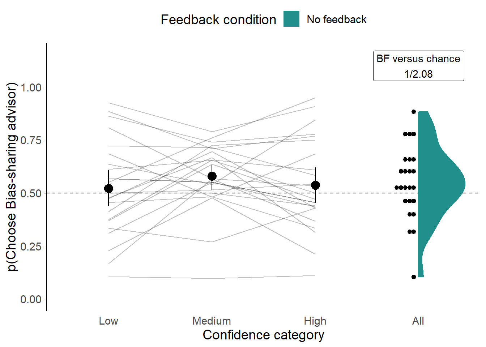
Figure 3.29: Advisor choice for Lab experiment.
Proportion of the time each participant picked the Bias Sharing advisor. Faint lines and dots indicate data from individual participants, while the large dot indicates the mean proportion across all participants. The dashed reference line indicates picking both advisors equally, as would be expected by chance. Error bars give 95% confidence intervals.
3.4.1.3.3.1 Advisor choice on medium-confidence trials
The advisors differed in their advice-giving as a function of the judge’s initial confidence. In trials where the judge’s initial estimate was made with medium confidence, however, the advisors were equal on judge confidence and agreement rate. Comparing selection rates for these trials alone revealed a clear preference for the Bias Sharing advisor (t(23) = 2.45, p = .022, d = 0.50, BFH1:H0 = 2.49; MP(BiasSharing) = 0.58 [0.51, 0.64], \(\mu\) = 0.5; Figure 3.29 “Medium” confidence category), although the Bayesian analysis again indicated an insensitive result, albeit in the hypothesised direction.
3.4.1.3.4 Advisor influence
| Effect | \(F\)(1, 23) | \(p\) | \(\eta^2\) | |
|---|---|---|---|---|
| Advisor | 0.28 | .602 | .001 | |
| Trial type | 4.23 | .051 | .001 | |
| Advisor agreement | 13.88 | .001 | \(\text{*}\) | .175 |
| Advisor:Trial type | 0.04 | .842 | .000 | |
| Advisor:Advisor agreement | 0.75 | .395 | .001 | |
| Trial type:Advisor agreement | 1.99 | .172 | .000 | |
| Advisor:Trial type:Advisor agreement | 0.01 | .935 | .000 | |
| Degrees of freedom: 1, 23 |
Previous work in our lab demonstrated that the agree-in-confidence advisor exerted greater influence on the judges’ final decisions than the agree-in-uncertainty advisor (Pescetelli and Yeung 2021). Influence was examined with a 2x2x2 (Bias-sharing versus Anti-bias advisor; choice versus forced trials; agreement versus disagreement trials) ANOVA (Figure 3.30). This was chronologically the first experiment we ran, and the analysis was preregistered prior to the development of the capped influence measure designed to allow agreement and disagreement to be compared more fairly. No main effect was found for advisor (F(1,23) = 0.28, p = .602, MBias-sharing = 0.09 [0.06, 0.11], MAnti-bias = 0.08 [0.06, 0.11]), meaning that the previous finding was not replicated. As shown in Table 3.24, the only statistically significant effect was the main effect of agreement, with disagreement producing higher influence than agreement (F(1,23) = 0.04, p = .842, MAgree = 0.06 [0.03, 0.08], MDisagree = 0.13 [0.09, 0.17]).
When this analysis was repeated with the capped influence values (General Method - Capped influence§2.2.1.3.1) the effect of agreement was still significant, but less so (F(1,23) = 1.28, p = .269, MBias-sharing = 0.08 [0.06, 0.10], MAnti-bias = 0.08 [0.05, 0.10]), and a main effect of trial type also emerged (raw influence: F(1,23) = 4.23, p = .051, MChoice = 0.09 [0.06, 0.12], MForce = 0.08 [0.06, 0.11]; capped influence: F(1,23) = 5.38, p = .030, MChoice = 0.08 [0.06, 0.11], MForce = 0.08 [0.06, 0.10]).
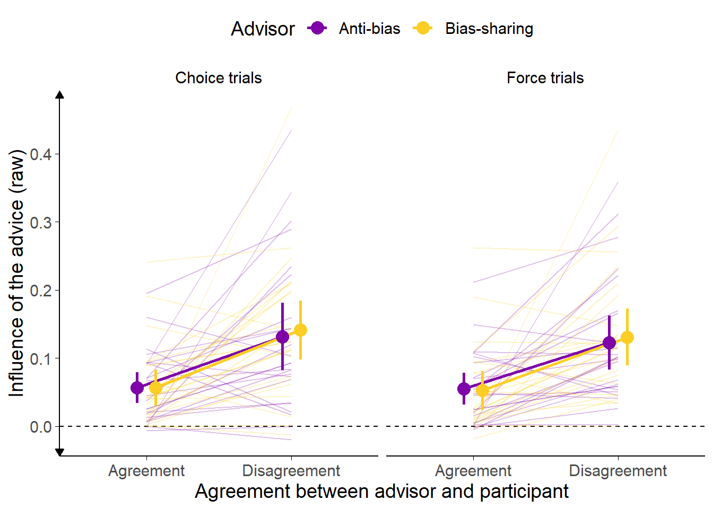
Figure 3.30: Advisor influence for Lab experiment.
Influence of advice from each advisor by advisor, agreement, and trial type. Faint lines and indicate data from individual participants, while the dots indicate the mean proportion across all participants. Error bars give 95% confidence intervals.
Note: vertical axis is truncated to show group differences more clearly, the theoretical maximum influence given the scale is 110. The minimum is 0 as shown.
3.4.1.3.4.1 Advisor influence on medium confidence trials
The agree-in-confidence and agree-in-uncertainty advisors differed by design in the frequency with which they agree with the participant as a function of the participant’s confidence in their initial estimate. To control for the effects of initial confidence on influence, the above analysis was repeated using only those trials on which the initial estimate was correct and given with medium confidence. In a deviation from preregistration, this analysis was constrained to only forced trials because some participants had missing data for some advisor-trial type-agreement contingencies in the Medium confidence trials.
The results were qualitatively identical to those for the trials at all confidence levels: a main effect of agreement (raw influence: F(1,23) = 13.60, p = .001; MDisagree = 0.12 [0.09, 0.16], MAgree = 0.05 [0.02, 0.08]; capped influence: F(1,23) = 8.70, p = .007; MDisagree = 0.10 [0.07, 0.13], MAgree = 0.05 [0.02, 0.08]); and no significant effect of advisor (raw influence: F(1,23) = 0.10, p = .759; MAnti-Bias = 0.08 [0.06, 0.11], MBias-Sharing = 0.09 [0.06, 0.12]; capped influence: F(1,23) = 0.00, p = .989; MAnti-Bias = 0.08 [0.05, 0.10], MBias-Sharing = 0.08 [0.05, 0.10]) or interaction (raw influence: F(1,23) = 1.36, p = .255; MDisagree-Agree|Anti-Bias = 0.05 [0.00, 0.10], MDisagree-Agree|Bias-Sharing = 0.09 [0.04, 0.14]; capped influence: F(1,23) = 1.91, p = .180; MDisagree-Agree|Anti-Bias = 0.04 [0.00, 0.08], MDisagree-Agree|Bias-Sharing = 0.06 [0.03, 0.10]).
3.4.1.3.5 Sensitivity to the manipulation
Finally, we planned to investigate the hypothesis that participants’ choice of advisor would be sensitive to the differential agreement strategies of the advisors, e.g. participants might preferentially select the advisor with the greater likelihood of agreement given their initial confidence. This was investigated by testing the participants’ mean Bias-sharing advisor pick rate in high- versus low-confidence trials. Pick rates did not differ (t(23) = 0.46, p = .650, d = 0.07, BFH1:H0 = 1/4.23; MHighConfidence = 0.54 [0.45, 0.63], MLowConfidence = 0.52 [0.43, 0.61]).
3.4.1.3.6 Follow-up tests
Given the weak effects of advisor profile differences on advisor choice, we ran two follow-up analyses on pick rates. A first analysis showed that the participants’ experiences of advisor agreement in the first block was correlated with the pick rate in later blocks. This suggested that initial exposure to the advisors may have overshadowed information in subsequent blocks. A second analysis showed that participants’ answers on the questionnaire measure correlated with their pick preference strength for the questions on asking about how accurate (r(22) = .491 [.109, .747], p = .015), and trustworthy (r(22) = .446 [.052, .720], p = .029) advisors were. The higher a participant rated one advisor as compared to the other on the questionnaire scale, the heavier that participant’s preference tended to be for picking the higher rated advisor. The same was not true for the questions asking how likeable (r(22) = .036 [-.373, .433], p = .869) and influential (r(22) = .345 [-.068, .657], p = .099) advisors were.
3.4.1.4 Discussion
The lab experiment, chronologically the first of all the experiments,14 produced equivocal results. While many of the expected relationships were found between participants’ subjective perceptions of the advisors and their behaviour towards them, these did not reliably translate into differential picking rates for the Bias-sharing and Anti-bias advisors. There was a significant difference in pick rates in medium confidence trials (where the advisors were equivalent to one another), but the Bayesian test indicated that the evidence in favour of differential pick rates was weak. Furthermore, there was no convincing reason we could determine why the preference (if it were a real effect) would not show up at other confidence levels. The early experience of advisors did appear to predict their relative pick rates, with the advisor who agreed more with the participant in the initial experimental block being more likely to be picked more frequently on subsequent blocks.
Overall, these results were underwhelming and difficult to interpret. We conducted an on-line replication of this study so that we could collect data from more participants and hopefully determine more accurately whether or not participants were sensitive to the differences in the advisors.
3.4.2 Experiment 4A: confidence-contingent advice effects in the Dots task
The results of the previous studies indicated that people update their preferences for advisors using agreement in place of feedback where objective feedback is unavailable. Previous results from our lab (Pescetelli and Yeung 2021) suggested that this capacity is heuristic is modified by confidence. The results of the previous experiment, however, failed to demonstrate these effects with advisor choice as the outcome.
The previous experiment was tightly controlled but the sample size was small. Using insights from its data, we refined the design and recruited a larger number of participants for the replication. Refinements included shortening the experiment, making the advisor profiles more extreme, reducing the questionnaires, and changing advisor representations from real faces and names to colours and numbers.
3.4.2.1 Open scholarship practices
This experiment was preregistered at https://osf.io/h6yb5.
The experiment data are available in the esmData package for R (Jaquiery 2021c), and also directly from https://osf.io/xb4kh/.
A snapshot of the state of the code for running the experiment at the time the experiment was run can be obtained from https://github.com/oxacclab/ExploringSocialMetacognition/blob/90c04ff21d3a2876beaddd9ee35c577a821e5727/AdvisorChoice/index.html.
3.4.2.2 Method
54 participants each completed 368 trials over 7 blocks of the Dots task. Participants started with 2 blocks of 60 trials that contained no advice. The first three trials were introductory trials that explained the task. All trials in this section included feedback indicating whether or not the participant’s response was correct.
Participants then did 5 trials with a practice advisor. They were informed that they would “get advice from an advisor to help you make your decision [original emphasis],” and that “advice is not always correct, but it is there to help you: if you use the advice you will perform better on the task.”
Participants then performed 2 sets of 2 blocks each. These sets consisted of 1 Familiarisation block of 60 trials in which participants were assigned one of two advisors on each trial. The Familiarisation block was followed with a Test block of 60 trials in which participants could choose between the two advisors they encountered throughout the Familiarisation block. The participants saw different pairs of advisors in each set, with each pair consisting of one advisor with each of the advice profiles.
Compared to the lab version of this experiment§3.4.1.2, the design was somewhat simplified. The forced and choice trials were grouped into discrete blocks, so participants had all the forced trials for a pair of advisors first, and then all the choice trials for those advisors. Secondly, the advisors’ biases were more extreme, as shown in Table 3.25.
3.4.2.2.1 Advice profiles
The two advisor profiles used in the experiment were Bias sharing and Anti-bias. The advisors are balanced for their overall accuracy and agreement rates, but the Bias sharing advisor agrees more frequently with participants when their initial estimate is correct and made with relatively high confidence. The Anti-bias advisor agrees more frequently with participants when their initial estimate is correct and made with relatively low confidence (Table 3.25).
| Advisor | Lowb | Mediumc | Highb | Correctd | Incorrect | Overalle | Accuracyf |
|---|---|---|---|---|---|---|---|
| Bias-sharing | 50 | 70 | 90 | 70 | 30 | 58.4 | 70 |
| Anti-bias | 90 | 70 | 50 | 70 | 30 | 58.4 | 70 |
| a Only correct trials received confidence-contingent advice | |||||||
| b 30% of trials | |||||||
| c 40% of trials | |||||||
| d Average correct agreement is the weigthed average of the previous three columns | |||||||
| e Overall agreement is p(correct) * p(agree|correct) + p(¬correct) * p(agree|¬correct) | |||||||
| f Overall accuracy is p(correct) * p(agree|correct) + p(¬correct) * p(¬agree|¬correct) |
3.4.2.3 Results
3.4.2.3.1 Exclusions
| Reason | Participants excluded |
|---|---|
| Accuracy too low | 0 |
| Accuracy too high | 0 |
| Missing confidence categories | 3 |
| Skewed confidence categories | 1 |
| Too many participants | 0 |
| Total excluded | 4 |
| Total remaining | 50 |
In line with the pre-registration, participants’ data were excluded from analysis where they had an average accuracy below 0.6 or above 0.85, did not have choice trials in all confidence categories (bottom 30%, middle 40%, and top 30% of prior confidence responses), had fewer than 12 trials in each confidence category, or finished the experiment after 50 participants had already submitted data which passed the other exclusion tests. Overall, 4 participants were excluded, with the details shown in Table 3.26.
3.4.2.3.2 Task performance
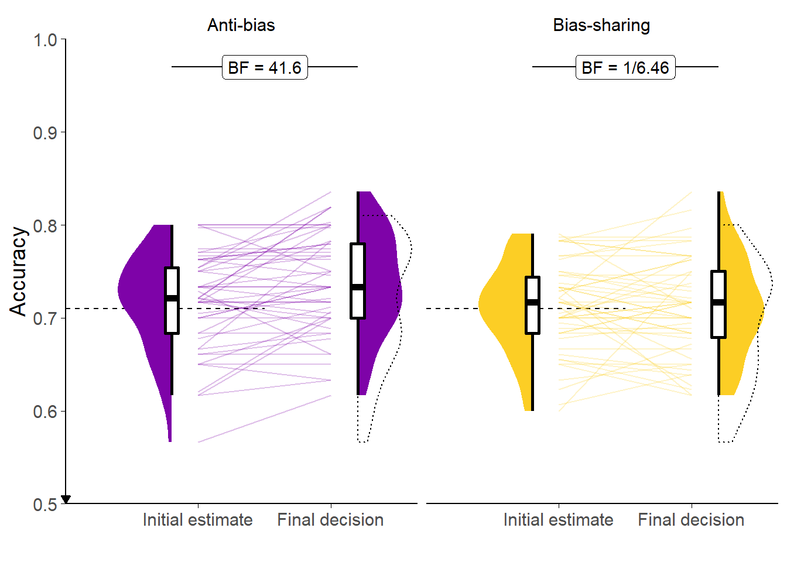
Figure 3.31: Response accuracy for the Dots task with confidence-contingent advisors.
Faint lines show individual participant means, for which the violin and box plots show the distributions. The half-width horizontal dashed lines show the level of accuracy which the staircasing procedure targeted, while the full width dashed line indicates chance performance. Dotted violin outlines show the distribution of actual advisor accuracy.
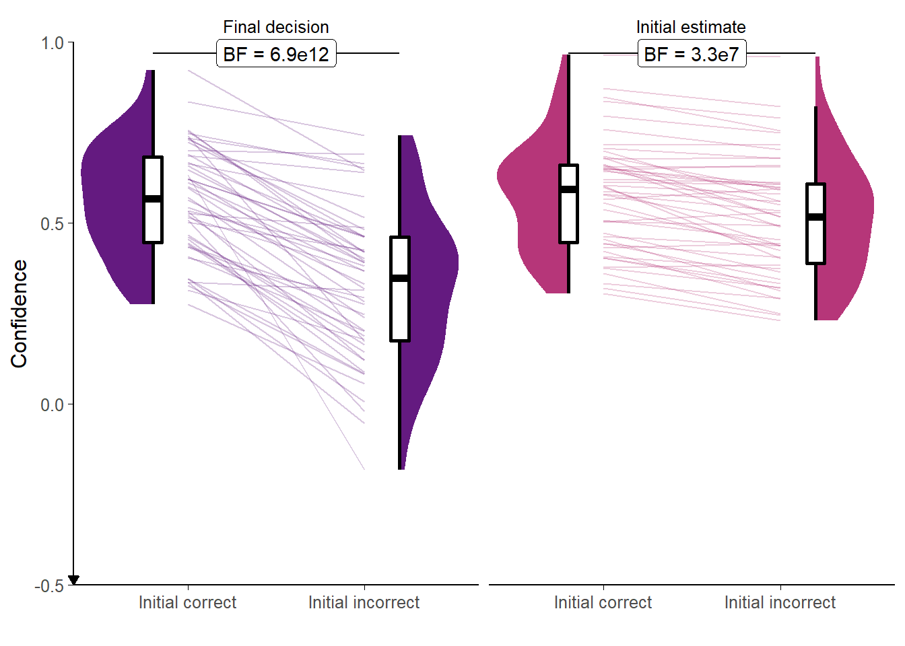
Figure 3.32: Confidence for the Dots task with confidence-contingent advisors.
Faint lines show individual participant means, for which the violin and box plots show the distributions. Final confidence is negative where the answer side changes. Theoretical range of confidence scores is initial: [0,1]; final: [-1,1].
Basic behavioural performance was similar to that observed with the same Dots task in Experiments 1A§3.1.1.3.2 and 2A§3.2.1.3.2. Initial estimate accuracy converged on the target 71%, and, as shown in Figure 3.31, participants benefited from advice in terms of their final decisions being more accurate than their initial estimates (ANOVA main effect of Time: F(1,49) = 5.78, p = .020; MFinal = 0.72 [0.71, 0.73], MInitial = 0.71 [0.71, 0.72]), predominantly driven by following advice from the Anti-bias advisor (interaction of Time and Advisor: F(1,49) = 5.85, p = .019; MImprovement|Anti-Bias = 0.02 [0.01, 0.03], MImprovement|Bias-Sharing = 0.00 [-0.01, 0.01]). There was no main effect of Advisor (F(1,49) = 1.95, p = .169; MAnti-Bias = 0.73 [0.71, 0.74], MBias-Sharing = 0.71 [0.70, 0.72]).
Figure 3.32 and ANOVA indicated that participants were more confident in their answers when they were correct compared to incorrect (F(1,49) = 187.32, p < .001; MCorrect = 28.58 [26.49, 30.66], MIncorrect = 20.97 [18.67, 23.28]), that participants were less confident in their final decisions than their initial estimates (F(1,49) = 33.44, p < .001; MFinal = 22.24 [19.87, 24.62], MInitial = 27.31 [25.08, 29.53]), and that this decrease was larger for trials where the initial estimate was incorrect (F(1,49) = 65.10, p < .001; MIncrease|Correct = -0.60 [-1.72, 0.52], MIncrease|Incorrect = -9.52 [-12.24, -6.80]).
3.4.2.3.3 Advisor performance
The advice is generated probabilistically from the rules described previously in Table 3.25. It is thus important to get a sense of the actual advice experienced by the participants.
| Advisor | Low | Medium | High | Correct | Incorrect | Overall | Accuracy |
|---|---|---|---|---|---|---|---|
| Anti-bias | 90.3 | 71.7 | 49.6 | 72.0 | 28.3 | 59.8 | 71.9 |
| Anti-bias (Target) | 90 | 70 | 50 | 70 | 30 | 58.4 | 70 |
| Bias-sharing | 49.0 | 69.0 | 90.3 | 67.8 | 28.8 | 56.5 | 68.7 |
| Bias-sharing (Target) | 50 | 70 | 90 | 70 | 30 | 58.4 | 70 |
Table 3.27 shows that advisors agreed with the participants’ initial estimates at close to target rates in all confidence categories. There was a larger than expected difference in agreement on correct answers overall, but this was not a significant difference (t(99) = 1.57, p = .118, d = 0.09, BFH1:H0 = 1/2.74; MAnti-bias = 0.50 [0.46, 0.55], MBias-sharing = 0.48 [0.44, 0.52]). The advisors were also further apart in terms of overall accuracy than desired, because of the different agreement rates for correct answers, although once again this difference was not significant (t(99) = 1.57, p = .118, d = 0.09, BFH1:H0 = 1/2.74; MAnti-bias = 0.50 [0.46, 0.55], MBias-sharing = 0.48 [0.44, 0.52]).
3.4.2.3.4 Hypothesis test
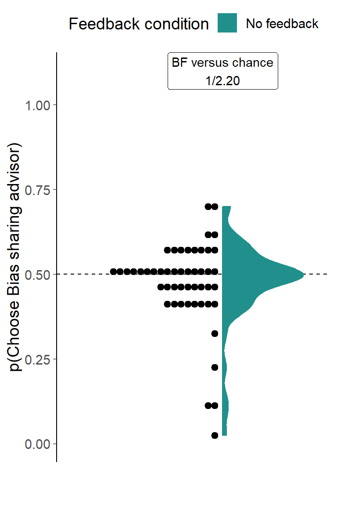
Figure 3.33: Dot task advisor choice for confidence-contingent advisors.
Participants’ pick rate for the advisors in the Choice phase of the experiment. The violin area shows a density plot of the individual participants’ pick rates, shown by dots. The chance pick rate is shown by a dashed line.
There was a strong tendency for participants to express no, or slight preferences between advisors (t(49) = -1.52, p = .134, d = 0.22, BFH1:H0 = 1/2.20; M = 0.47 [0.44, 0.51], \(\mu\) = 0.5). Intriguingly, almost all participants who expressed a stronger preference expressed it towards the Anti-bias advisor: in the direction counter to that hypothesised (Figure 3.33).
In the Medium confidence trials, where the Lab experiment showed a glimmer of a difference, there was evidence against the existence of a difference (t(49) = -0.91, p = .368, d = 0.13, BFH1:H0 = 1/4.40; M = 0.48 [0.43, 0.53], \(\mu\) = 0.5).
In this experiment we saw an extremely strong effect of picking the advisor in the first position on the screen (t(49) = 5.00, p < .001, d = 0.71, BFH1:H0 = 2.4e3; MP(PickFirst) = 0.65 [0.59, 0.71], \(\mu\) = 0.5), an effect that we would hope would be random and even out across participants. In this experiment, as a function of chance, the Bias-sharing advisor appeared in the favoured top position more frequently than we would expect (BFH1:H0 = 18.3; MP(BiasSharingFirst) = 0.48 [0.47, 0.49], \(\mu\) = 0.5). The effect of preferring to pick the advisor in the first position, therefore, would enhance the pick rate of the Bias-sharing advisor. Despite this, we saw that the advisors were picked at equivalent rates, allowing us to be even more sure that there is no overall preference for the Bias-sharing advisor driven by that advisor’s method of providing advice.
3.4.2.4 Discussion
While advisor choice and advice-taking are different domains, the previous experiments have shown strong similarities in the tendencies of participants: participants tend to be more influenced by the same kinds of advisors that they are more willing to hear from. On this basis, following Pescetelli and Yeung (2021), we would expect to see a preference for picking the Bias sharing advisor. We do not see this preference, and, insofar as we see any preference at all, we see the opposite.
3.4.3 Confidence-contingent advice effects in the Dates task
The Dates task was not used to study confidence-contingent advice because such advice requires both a precise control over the relative agreement and accuracy rates of the advisors and the ability to estimate confidence in responses. The advisors’ agreement (and hence accuracy) profiles depend on the participant’s performance, and this is unknown a priori in the Dates task whereas it is controlled in the Dots task using a staircase procedure. Different approaches to estimating participants’ confidence were trialled, including a pilot experiment in which the width of marker used by participants was used as a proxy for confidence, but none of the approaches produced any discernible effect of confidence on advisor agreement.
We did attempt to design a version of the Dates task that would allow confidence-contingent advice, but pilot studies were largely unsuccessful and the time, cost, and effort required to refine the study were not deemed worthwhile in light of the null results from the Dots task studies.
3.4.4 Discussion
Across two tasks investigating whether people preferentially selected advisors who shared their biases we found scant evidence in favour of the effect. The two advisors, balanced for overall agreement and accuracy to eliminate the effects seen in previous experiments, differed in their likelihood of agreement based on the participants’ initial estimate accuracy (following Pescetelli and Yeung 2021). The Bias-sharing advisor agreed more frequently with a participant when the initial estimate was made with high confidence, and less frequently when the initial estimate was made with low confidence, and the Anti-bias did the opposite. Overall, there was no evidence that participants picked these advisors at different rates. Looking just at the medium confidence trials, where the advisors were exactly equivalent, there was very weak evidence that the Bias-sharing advisor was picked more frequently in the Lab experiment and reasonable evidence against any difference at all in the on-line replication.
The data from these studies were not conclusive against the existence of this effect, especially when integrated with the findings of Pescetelli and Yeung (2021). It is plausible, for instance, that metacognitive moderation does happen in advice evaluation, but that these effects are more subtle than the broader effects of accuracy and agreement, and that the studies here were too underpowered to detect these effects. It seems unlikely that metacognitive moderation effects would exist in the advisor evaluation domain (as shown in Pescetelli and Yeung (2021)) but not in the advisor choice domain, given the rough parity demonstrated between these domains across the dimensions of accuracy and agreement in previous experiments.
3.5 General discussion
Previous work in our lab indicated that people are able to evaluate advice in the absence of feedback using agreement as a proxy (Pescetelli and Yeung 2021). We performed a series of experiments investigating whether the patterns observed for advice-taking are also evident in advisor choice. Our experiments exercised tight control over the advisors’ answers in the domains of agreement and accuracy, and allowed us to explore their relative contributions.
Modelling and theoretical work indicates that biased source selection can dramatically reshape communication networks and create echo chamber effects where accurate but unpalatable information is ignored (Sunstein 2002; Madsen, Bailey, and Pilditch 2018). Empirical research on source selection behaviour has found relatively little indication that people behave this way in the real world (Marquart 2016; Sears and Freedman 1967; Nelson and Webster 2017), particularly in terms of avoiding exposure to unpalatable information (Weeks, Ksiazek, and Holbert 2016; Jang 2014). If the effects seen by Pescetelli and Yeung (2021) in the domain of advice-taking also occur in the domain of advisor choice, they may demonstrate in principle a psychological mechanism which could drive biased source selection that are rational and appropriate given the information available.
3.5.0.1 Advisor choice results
The preferences for advisors were broadly consistent with the pattern expected from previous work on advisor influence (Pescetelli and Yeung 2021). Experiments 1B and 3B showed that, where objective feedback could be used to calculate advisor performance, participants showed a systematic preference for picking the advisor who would provide the most accurate advice. Experiment 1A showed that this preference endured even when feedback was removed, although the result was not replicated in Experiment 1B.
Experiments 2A and 2B showed that participants who did not receive feedback systematically preferred to choose to get advice from High agreement advisors over Low agreement advisors. Experiments 3A and 3B indicated that this preference for agreement in the absence of feedback did not extend to a preference for agreement over accuracy. These results are consistent with an account of advisor trust updating which uses agreement as a proxy for advisor accuracy when more reliable information is not available, although some additional mechanism is required to explain how accuracy can dissociate from agreement in the absence of feedback. Pescetelli and Yeung (2021) offer confidence as an additional mechanism, but attempts to replicate their advisor influence experiment in the domain of advisor choice (Experiments 4A and the Lab experiment) did not provide empirical support for this.
3.5.0.2 Accuracy of advice
Our experiments showed that people will prefer to seek advice from an advisor who is more accurate, provided that they can identify that advisor. This coheres well with results from Experiment 0§B.1.0.3.4 and other literature in the advice-taking domain where greater task accuracy is referred to as ‘expertise’ (Pescetelli and Yeung 2021; Ilan Yaniv and Kleinberger 2000; Gino, Brooks, and Schweitzer 2012; Rakoczy et al. 2015; Sniezek, Schrah, and Dalal 2004; Soll and Larrick 2009; Tost, Gino, and Larrick 2012; Schultze, Mojzisch, and Schulz-Hardt 2017; Wang and Du 2018; Önkal et al. 2017). A review of this advice-taking literature can be found in another chapter§5.2.3.1.
Like Pescetelli and Yeung (2021), we were interested in whether people are sensitive to accuracy for decisions they make where feedback is not provided. The majority of decisions on which we seek advice in everyday life do not come with feedback, or come with only infrequent and often delayed feedback. Although the perceptual decision-making task and the date estimation task used here are highly stylized, they can mimic this feedback regime. When feedback was denied to participants, leaving them unable to use the feedback to determine the accuracy of the advisors, their preferences only favoured the more accurate advisor in the Dots task (Experiment 1A§3.1.1.3.4), with no systematic preference in the Dates task (Experiment 1B§3.1.2.3.5). This difference might be explained by the relative difficulty of the tasks.
3.5.0.3 Confidence-weighted agreement as a proxy for accuracy
Where people cannot use objective feedback to determine the quality of advice, they use whether or not the advice agrees with them as a proxy for accuracy. This is shown by Experiments 2A§3.2.1.3.4 and 2B§3.2.2.3.4, and is consistent with Experiment 1A§3.1.1.3.4 (although not with Experiment 1B§3.1.2.3.5 given Experiment 3B§3.3.2.3.4). It also reflects, in the advisor choice domain, the findings of Pescetelli and Yeung (2021) in the advice-taking domain.
Pescetelli and Yeung (2021) theorised, on the basis of their experiments, that people assess advice on the basis of confidence-weighted agreement. This means that, where a judge is confident in their own opinion, offering agreement or disagreement results in a large increase or decrease in trust in the advisor, respectively. Where a judge is very unsure of the accuracy of their own opinion, however, neither agreement nor disagreement affect trust in the advisor very much – it is as if the judge has no frame of reference by which to assess the advice they have been given.
Assuming that trust in an advisor translates directly into a preference for hearing advice from that advisor, this theory accounts for some, but not all of our experimental results. It provides a straightforward account of the results of Experiment 2A§3.2.1.3.4 and 2B§3.2.2.3.4, where participants who did not receive feedback preferred to hear advice from the advisor more likely to agree with them (while overall advisor accuracy was held constant). It can also explain the results of Experiment 1A§3.1.1.3.4, because the probability that two independent binary judgements agree is related to the probabilities that they are greater than chance (Soll and Larrick 2009). Given participants were above chance in their perceptual decisions, the more accurate advisor would agree more, as indicated in Table 3.1. Furthermore, if agreement is weighted by confidence, this discrepancy would be greater where the weighting is higher to the extent that participants were well calibrated in their confidence: where they were most confident they were most likely to be correct, and so they were proportionally more likely to be agreed with by the more accurate advisor.
Experiment 1B§3.2.2.3.4 is harder to explain under the Pescetelli and Yeung (2021) theory. Participants should be sensitive to differential agreement rates as in Experiment 1A§3.2.1.3.4, and this should be enhanced to the extent that participants’ confidence is well calibrated. The results were doubtful that participants with greater accuracy or confidence calibration expressed a greater preference for the more accurate advisor. It could have been the case that individual high-impact trials where a participant was extremely confident of the correct answer happened to systematically coincide with the less accurate advisor agreeing with the participant, but this seems very unlikely indeed. All in all, the results from Experiment 1B do not cohere well with the theory.
Experiments 3A§3.3.1.4.4 and 3B§3.3.2.3.4 are also consistent with the theory. Participants denied feedback did not prefer to see advice from the agreeing advisor over the accurate one. This result would make sense if participants were able to detect the accuracy advantage of the accurate advisor: they might well have noticed that that advisor tended to agree with them where they were confident of the correct answer, and to disagree otherwise. The data did not support that conclusion. In the continuous Dates task used for Experiment 3B, the difference between agreement and accuracy is much clearer to participants because the advisors place markers on a timeline that also shows the participant’s initial estimate. Participants in Experiment 3B may have been able to detect the redundancy of the agreeing advisor’s advice and preferred the accurate advisor for that reason. We included a debrief questionnaire asking what participants though was the difference between the advisors, and several participants indicated in their responses that they had identified that the agreeing advisor tended to reflect their own answer.
The most clear failure of the theory in accounting for the present results is in the experiments using confidence-contingent advice, the Lab experiment and Experiment 4A§3.4.2.3.4. In these experiments, the advisors were specifically constructed such that they would be balanced for overall agreement and accuracy, but differentiated at the extremes of participants’ subjective confidence. One specific test indicated that there may be an effect – a frequentist test on the moderate-confidence Lab experiment trials where advisors’ agreement rates were balanced. This test, and this experiment, are the closest to those reported by Pescetelli and Yeung (2021). The effect, if there is one, does not seem to generalise to advisor choice behaviour in shorter versions of the task performed by participants outside of a laboratory setting.
Overall, the results of this suite of experiments suggest that trust in advisors, as evaluated by advisor choice preference, is determined by a variety of factors, even in highly constrained perceptual and general knowledge estimation tasks. One of these factors may be confidence-contingent agreement, or agreement more generally. We have offered some speculation as to properties of the task and context that might alter the extent to which confidence-contingent agreement determines trust in advisors. Whether there is any dominant mechanism in play that accounts for a sizeable amount of the variation in trust remains unknown, but it appears unlikely that confidence-contingent agreement is that mechanism.
3.5.0.4 Variability between participants
The experiments produced a range of results, from clear evidence of systematic preferences to clear evidence of the lack of any such systematicity in preferences. Interestingly, participants displayed a range of preference patterns. Most participants in most conditions in most studies demonstrated fairly balanced picking behaviour; perhaps motivated by a sense of fairness or novelty, or perhaps as a result of random selection or the influence of other factors such as the position of the advisor on the screen. Where effects appear in the data, they show up as a fat tail on a skewed distribution: a sizeable minority select a given advisor on most trials, and almost no one selects the other advisor on most of the trials.
The advisor preference distributions differ somewhat between tasks. Although advisor choice distributions in both tasks are roughly normally distributed, those in the Dots task results are sharper. This sharpness may be a result of many participants selecting advisors at approximately equal rates. If participants become bored or fatigued by the experiment they may disengage and select advisors in a random manner.
Where manipulations are effective in the Dots task (e.g. Experiment 3B§3.3.1) they change the direction of preferences: a good many participants continue to pick advisors at approximately equal rates, but preferences in those who do express a preference systematically favour one particular advisor. Systematic differences in the Dates task are signified by distributions in which the modal preference moves to an extreme preference for the relevant advisor while the tails of the distribution continue to cover the whole range. These differences are likely a consequence of the difference in the number of Choice trials in each Task. The Dates task only has around 10 Choice trials, and it is relatively common for participants to select a single preferred advisor repeatedly. The Dots task, however, has 30-60 Choice trials, meaning participants may become tired of seeing advice from the same advisor, increasing the novelty value of advice from the non-preferred advisor and thus reducing the apparent strength of preference. In support of this idea, the distribution of preferences in Experiment 3A§3.3.1.4.4), which had 30 Choice trials, was much more similar to those from the Dates task than the other Dots task experiments, which had 60 Choice trials. The similarity may have reflected the absence of any effect rather than the number of Choice trials, but it also more closely resembles the distributions of the Dates task where effects are see (1B§3.1.2.3.5, 2B§3.2.2.3.4, 3B§3.3.2.3.4) than the other Dots task distribution where they are not (4A§3.4.2.3.4).
The kind of heterogeneity revealed in the experiments’ results is seldom included in population models of influence dynamics. In the following chapter§4, we explore the effects of including this kind of heterogeneity in agent-based models of advice giving.
3.5.0.6 Limitations
As noted above, there were several issues with the experiments that were only noticed after data had been collected. The most serious of these was that the Dates task did not counterbalance the advisors’ positions, and post hoc analysis of the Dots task data suggested that advisor position may have an unexpectedly important role in advisor choice behaviour. Another concern is that the difficulty of the Dates task was high, and also highly variable between participants. In some ways this is a strength, because it could theoretically allow us to detect variations in advisor choice behaviour as a function of participants’ ability, but in practice we did not find these. We were left only with the drawbacks, therefore, of higher noise in the data and the possibility of strong effects of choice being driven by difficult-to-identify high-impact individual trials.
A related concern is the frequently large and significant effects of advisor position in the Dots task. Participants frequently picked the advisor at the top of the screen, regardless of that advisor’s identity. This suggests disengagement with the task. Interestingly, the advisor at the top of the screen was further away from the answer bar (where participants input their initial estimates and final decisions) than the advisor at the bottom. We would expect lazy participants using a mouse to predominantly select the closer advisor. For participants using mobile phones, it would be equally easy to select either advisor.
Ecological validity is a concern more generally, too. While these studies were appropriate for capturing the behaviour of interest, they are also highly stylized in both their decision-making tasks and in the relationship between the participant and the advisor. The tasks are somewhat unusual in that people are seldom required to compare barely-seen visual scenes or estimate historical dates in their everyday lives. When they do, they are unlikely to seek advice on them. This is a limitation general to most psychology experiments in one way or another, but no less important for that.
The relationship between the participants and the advisors was also unusual. While some researchers have suggested that social influence phenomena can be explained by reinforcement learning from repeated interactions (Behrens et al. 2008; FeldmanHall and Dunsmoor 2019; Heyes et al. 2020), the kind of repetition presented in these tasks is not a typical feature of human relationships. In some particular cases, for example working with a colleague at a job that requires rapid and repeated joint decision-making, behaviour might approximate that of our tasks, although for our domain of advisor choice to be of particular interest these people would also have to have the power to select their partner.
3.5.0.7 Conclusion
These experiments paint a rather equivocal picture, without being able to offer the kind of strong evidence we would like concerning the validity of the Pescetelli and Yeung (2021) theory of confidence-weighted advice evaluation. Despite the equivocal picture, we do find that people are selective in who they ask for advice, and that selections are dominated by accuracy where there’s a reliable cue, and by agreement when there is not. One major observation revealed in the experiments was the extent to which participants exhibited a wide range of preference strengths and directions, particularly where systematic effects of advisor preference were absent. In the following chapter§4 we use agent-based computational modelling to investigate the consequences of agreement as a driver of advisor choice in the formation of echo chambers in information exchange networks. The simulations also explore the role of the kind of heterogeneity revealed in the experiments in this chapter.
3.5.0.5 Social and Personality perspectives
Source selection, most robustly selective exposure, is argued in the Social and Personality Psychology domains to be a product of a drive for cognitive consonance (Festinger 1957) or protecting a positive self-concept (Knobloch-Westerwick 2015) rather than an heuristic which is expected to improve the accuracy of decision-making under common real-world conditions. While these experiments do not directly contradict that literature, they do indicate that source selection can occur in the absence of any clear implications of the choice for a person’s view of themselves. It may be argued that the effects in the absence of meaningful moral or political contexts reflects a bleed over from processes that perform useful work in vigilantly guarding a person’s self-image, and that are always active when choices over information sources are made. Conversely, however, it could be argued that much of the selective exposure evidence represents a drive for accurate information: if I strongly believe in a liberal world-view I may judge the reporting of a liberal media outlet to be more objectively accurate, and be more willing to view its content on that basis.